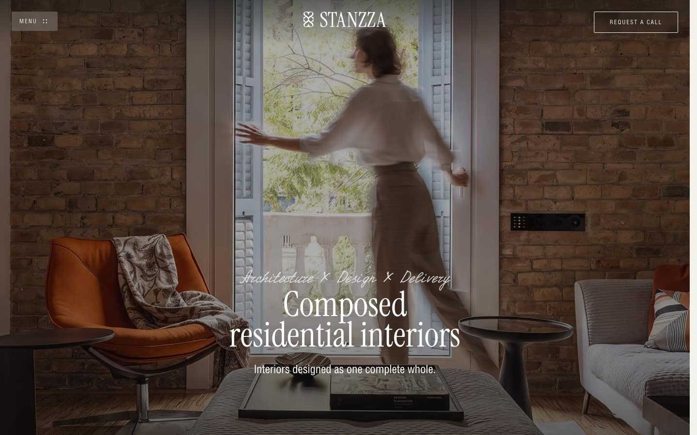

<title>The House Issue</title>
<meta name="claude:viewport-fit-sides" content="cover">
<meta name="description" content="The founders' plan, version 2: the homeowner page as a studio-authored, image-led, job-made website.">
<link rel="preconnect" href="https://fonts.googleapis.com">
<link rel="preconnect" href="https://fonts.gstatic.com" crossorigin>
<link rel="stylesheet" href="https://fonts.googleapis.com/css2?family=Playfair+Display:ital,wght@0,400;0,500;1,400&family=Inter:wght@400;500&family=DM+Mono:wght@400;500&display=swap">
<style>
/* Layout: a printed plan. One 1100px measure; each section opens with a DM Mono folio in a
   narrow left column and runs its prose at 68ch beside it; figures and wide tables take the
   whole measure. Phone width stacks to one column with 16px gutters. */
:root {
  --paper: #FAF7F2;
  --stock: #FCFAF6;
  --hairline: #E8E3DB;
  --ink: #2C2926;
  --oak-ink: #4E4339;
  --subtle: #5A4E43;
  --forest: #3E5145;
  --forest-press: #2F3E35;
  --on-forest: #FAF7F2;
  --card: #FFFDF9;
  --card-rule: #C9C7BD;
  --note: #F0F3ED;
  --record: #E8EEE7;
  --record-rule: #B6C3B7;
  --line: #A79C8F;
  --focus: #3E5145;

  --display: 'Playfair Display', Georgia, 'Times New Roman', serif;
  --body: 'Inter', -apple-system, BlinkMacSystemFont, 'Segoe UI', sans-serif;
  --mono: 'DM Mono', 'SF Mono', 'Fira Code', ui-monospace, monospace;
}
@media (prefers-color-scheme: dark) {
  :root:not([data-theme="light"]) {
    --paper: #1E1C19;
    --stock: #262320;
    --hairline: #3A3631;
    --ink: #F3EDE4;
    --oak-ink: #D8CDBF;
    --subtle: #BFB3A5;
    --forest: #8FA797;
    --forest-press: #A9BCAF;
    --on-forest: #1E1C19;
    --card: #2A2723;
    --card-rule: #4A453E;
    --note: #232A25;
    --record: #26302A;
    --record-rule: #4A5C50;
    --line: #6E665C;
    --focus: #8FA797;
    color-scheme: dark;
  }
}
:root[data-theme="dark"] {
  --paper: #1E1C19;
  --stock: #262320;
  --hairline: #3A3631;
  --ink: #F3EDE4;
  --oak-ink: #D8CDBF;
  --subtle: #BFB3A5;
  --forest: #8FA797;
  --forest-press: #A9BCAF;
  --on-forest: #1E1C19;
  --card: #2A2723;
  --card-rule: #4A453E;
  --note: #232A25;
  --record: #26302A;
  --record-rule: #4A5C50;
  --line: #6E665C;
  --focus: #8FA797;
  color-scheme: dark;
}

body {
  background: var(--paper);
  color: var(--ink);
  font-family: var(--body);
  font-size: 17px;
  line-height: 1.6;
  -webkit-font-smoothing: antialiased;
}
.page {
  max-width: 1100px;
  margin: 0 auto;
  padding-left: max(16px, env(safe-area-inset-left, 0px));
  padding-right: max(16px, env(safe-area-inset-right, 0px));
  padding-block: 72px 96px;
  box-sizing: content-box;
}

/* Type */
h1, h2, h3 { font-family: var(--display); font-weight: 400; text-wrap: balance; margin: 0; color: var(--ink); }
h1 { font-size: clamp(46px, 7.4vw, 88px); line-height: 1.02; letter-spacing: -0.012em; }
h2 { font-size: clamp(28px, 3.4vw, 40px); line-height: 1.12; }
h3 { font-size: 20px; line-height: 1.3; font-weight: 500; }
p, li, dd { max-width: 68ch; }
p { margin: 0; }
.eyebrow {
  font-family: var(--mono); font-weight: 500; font-size: 12px; line-height: 16px;
  letter-spacing: 0.08em; text-transform: uppercase; color: var(--subtle);
}
.folio { font-family: var(--mono); font-size: 13px; letter-spacing: 0.04em; color: var(--subtle); }
.folio b { font-weight: 400; color: var(--ink); font-size: 28px; display: block; line-height: 1; margin-bottom: 8px; letter-spacing: 0; }
.lede { font-family: var(--display); font-style: italic; font-size: clamp(20px, 2.2vw, 24px); line-height: 1.4; color: var(--oak-ink); }
.meta { font-family: var(--mono); font-size: 15px; letter-spacing: 0.02em; color: var(--subtle); }
.id { font-family: var(--mono); font-size: 13px; letter-spacing: 0.02em; color: var(--forest); white-space: nowrap; }
code { font-family: var(--mono); font-size: 0.86em; color: var(--oak-ink); background: var(--stock); border: 1px solid var(--hairline); border-radius: 3px; padding: 0 4px; overflow-wrap: anywhere; }
blockquote { margin: 0; font-family: var(--display); font-style: italic; font-size: 21px; line-height: 1.45; color: var(--oak-ink); max-width: 60ch; }
blockquote cite { display: block; font-family: var(--mono); font-style: normal; font-size: 15px; color: var(--subtle); margin-top: 8px; }
a { color: var(--forest); text-decoration-thickness: 1px; text-underline-offset: 3px; }
a:hover { color: var(--forest-press); }
:focus-visible { outline: 2px solid var(--focus); outline-offset: 2px; border-radius: 2px; }
strong { font-weight: 500; }

/* Title block */
.masthead { display: grid; gap: 24px; padding-bottom: 56px; border-bottom: 1px solid var(--hairline); }
.masthead .sub { font-family: var(--display); font-style: italic; font-size: clamp(20px, 2.6vw, 28px); line-height: 1.3; color: var(--oak-ink); max-width: 40ch; }
.first {
  background: var(--note); border-radius: 8px; padding: 24px 28px; display: grid; gap: 14px; max-width: 76ch;
}

/* Sections */
.sec {
  display: grid; grid-template-columns: 150px minmax(0, 1fr); column-gap: 48px; row-gap: 28px;
  padding-block: 64px; border-bottom: 1px solid var(--hairline);
}
.sec > .folio { grid-row: 1 / span 2; padding-top: 6px; }
.sec-body { display: grid; gap: 24px; min-width: 0; align-content: start; }
.sec-body > .wide { min-width: 0; }
.sec-body h3 { margin-top: 16px; }
.sec-body h4 { margin: 8px 0 0; font-family: var(--mono); font-weight: 500; font-size: 12px; line-height: 16px; letter-spacing: 0.08em; text-transform: uppercase; color: var(--subtle); }
ul, ol { margin: 0; padding-left: 1.2em; display: grid; gap: 8px; }
li::marker { color: var(--subtle); }
.two-col { display: grid; grid-template-columns: repeat(2, minmax(0, 1fr)); gap: 32px; }
.two-col > div { display: grid; gap: 12px; align-content: start; min-width: 0; }

/* Authority list */
.authority { display: grid; grid-template-columns: max-content minmax(0, 1fr); column-gap: 24px; row-gap: 0; margin: 0; }
.authority dt, .authority dd { padding-block: 12px; border-top: 1px solid var(--hairline); margin: 0; }
.authority dt { padding-top: 15px; }
.authority dd { font-size: 16px; }

/* Caption forms */
.captions { list-style: none; padding: 0; gap: 0; }
.captions li { display: grid; grid-template-columns: 150px minmax(0, 1fr); gap: 16px; padding-block: 10px; border-top: 1px solid var(--hairline); max-width: none; }
.captions li span:first-child { font-family: var(--mono); font-size: 12px; text-transform: uppercase; letter-spacing: 0.08em; color: var(--subtle); padding-top: 3px; }
.captions li span:last-child { font-family: var(--mono); font-size: 15px; line-height: 1.45; color: var(--oak-ink); }
.captions li small { display: block; font-size: 15px; color: var(--subtle); margin-top: 4px; }

/* Callout: a corrected defect or an open point */
.callout { border-left: 2px solid var(--forest); padding: 4px 0 4px 16px; display: grid; gap: 8px; max-width: 76ch; }
.callout .eyebrow { color: var(--forest); }

/* Tables */
.tw { max-width: 100%; overflow-x: auto; -webkit-overflow-scrolling: touch; }
table { border-collapse: collapse; width: 100%; font-size: 15px; line-height: 1.5; }
caption { caption-side: top; text-align: left; font-family: var(--mono); font-size: 12px; letter-spacing: 0.02em; color: var(--subtle); padding-bottom: 10px; }
th { font-family: var(--mono); font-weight: 500; font-size: 12px; letter-spacing: 0.08em; text-transform: uppercase; color: var(--subtle); text-align: left; padding: 10px 16px 10px 0; border-bottom: 1px solid var(--card-rule); vertical-align: bottom; }
td { padding: 12px 16px 12px 0; border-bottom: 1px solid var(--hairline); vertical-align: top; }
td.mono, th.mono { font-family: var(--mono); font-size: 14px; white-space: nowrap; font-variant-numeric: tabular-nums; }
td em { font-family: var(--display); font-size: 17px; }
td.num, th.num { font-variant-numeric: tabular-nums; white-space: nowrap; }
.yn td.c, .yn th.c { text-align: center; padding-right: 8px; padding-left: 8px; font-family: var(--mono); font-size: 14px; }
.t-arrival { max-width: 760px; }
.t-risks td:first-child { width: 34%; }
.ledger td:first-child { font-family: var(--mono); font-size: 14px; color: var(--forest); white-space: nowrap; }
.ledger td.status { font-family: var(--mono); font-size: 14px; color: var(--oak-ink); }

/* Figures */
figure { margin: 0; display: grid; gap: 12px; min-width: 0; }
figcaption { font-family: var(--mono); font-size: 15px; line-height: 1.55; color: var(--subtle); max-width: 76ch; }
.dg-wrap { overflow-x: auto; background: var(--stock); border: 1px solid var(--hairline); border-radius: 8px; padding: 20px; }
.dg { display: block; width: 100%; height: auto; }
/* SVG text sizes are user units; each diagram's viewBox is sized so no label renders below
   11px at 390 or 12px at 1440. The pipeline swaps to a vertical drawing below 1100px. */
.dg-arrival { max-width: 425px; margin: 0 auto; }
.dg-pipe-v { max-width: 400px; margin: 0 auto; }
.dg-pipe-h { display: none; }
@media (min-width: 1100px) {
  .dg-pipe-h { display: block; }
  .dg-pipe-v { display: none; }
}
@media (min-width: 761px) {
  /* the pipeline takes the whole 1100px measure, folio column included */
  .sec-body > .bleed { margin-left: -198px; }
  .bleed .dg-wrap { padding: 16px 12px; }
}

/* Reference captures: two 1440 screens and one 390 screen at a shared height */
.refs { display: grid; grid-template-columns: 3.46fr 3.46fr 1fr; gap: 16px; align-items: start; }
.refs figure { gap: 10px; }
.refs img { display: block; width: 100%; height: auto; border: 1px solid var(--hairline); background: var(--stock); }
.refs figcaption { font-size: 15px; }
.refs figcaption small { display: block; margin-top: 4px; }

.dg .frame { fill: var(--paper); stroke: var(--line); stroke-width: 1; }
.dg .tab { fill: var(--paper); stroke: none; }
.dg .bound { fill: none; stroke: var(--line); stroke-width: 0.75; stroke-dasharray: 3 4; }
.dg .fold { fill: none; stroke: var(--forest); stroke-width: 1.5; }
.dg .hair { fill: none; stroke: var(--line); stroke-width: 1; }
.dg .tick { fill: none; stroke: var(--subtle); stroke-width: 1; }
.dg .card { fill: var(--card); stroke: var(--card-rule); stroke-width: 1; }
.dg .note { fill: var(--note); stroke: none; }
.dg .act { fill: var(--forest); stroke: none; }
.dg .key { fill: var(--card); stroke: var(--forest); stroke-width: 1.5; }
.dg .flow { fill: none; stroke: var(--subtle); stroke-width: 1.25; }
.dg .head { fill: var(--subtle); stroke: none; }
.dg .photo { fill: var(--stock); stroke: var(--line); stroke-width: 1; }
.dg .t { fill: var(--ink); font-family: var(--body); font-size: 15px; }
.dg .tb { fill: var(--ink); font-family: var(--body); font-size: 15px; font-weight: 500; }
.dg .tk { fill: var(--forest); font-family: var(--body); font-size: 15px; font-weight: 500; }
.dg .d { fill: var(--ink); font-family: var(--display); font-size: 22px; }
.dg .dh { fill: var(--ink); font-family: var(--display); font-size: 30px; }
.dg .m { fill: var(--subtle); font-family: var(--mono); font-size: 15px; }
.dg .e { fill: var(--subtle); font-family: var(--mono); font-size: 12px; font-weight: 500; letter-spacing: 0.12em; }
.dg .ms { fill: var(--subtle); font-family: var(--body); font-style: italic; font-size: 15px; }
.dg .at { fill: var(--on-forest); font-family: var(--body); font-size: 16px; font-weight: 500; }
.dg .pt { fill: var(--ink); font-family: var(--body); font-size: 14px; font-weight: 500; }
.dg .pk { fill: var(--forest); font-family: var(--body); font-size: 14px; font-weight: 500; }
.dg .pd { fill: var(--subtle); font-family: var(--body); font-size: 13px; }

/* Decision cards */
.cards { display: grid; grid-template-columns: repeat(2, minmax(0, 1fr)); gap: 24px; }
.cards-head { margin-top: 16px; }
.dcard { background: var(--card); border: 1px solid var(--card-rule); border-radius: 8px; padding: 24px; display: grid; gap: 14px; align-content: start; min-width: 0; }
.dcard h3 { margin: 0; }
.dcard p, .dcard blockquote { font-size: 15.5px; line-height: 1.55; }
.dcard blockquote { font-size: 17px; }
.dcard .k { font-family: var(--mono); font-size: 12px; letter-spacing: 0.08em; text-transform: uppercase; color: var(--subtle); display: block; margin-bottom: 4px; }
.dcard .rec { background: var(--record); border: 1px solid var(--record-rule); border-radius: 6px; padding: 12px 14px; }
.ruling { display: flex; align-items: flex-end; gap: 12px; font-family: var(--mono); font-size: 13px; color: var(--ink); padding-top: 8px; }
.ruling span { flex: 1; border-bottom: 1px solid var(--line); height: 20px; }

.colophon { padding-top: 48px; text-align: left; }

@media (max-width: 760px) {
  body { font-size: 16px; }
  .page { padding-block: 40px 64px; }
  .sec { grid-template-columns: minmax(0, 1fr); padding-block: 48px; row-gap: 20px; }
  .sec > .folio { grid-row: auto; padding-top: 0; }
  .folio b { font-size: 22px; }
  .two-col, .cards { grid-template-columns: minmax(0, 1fr); }
  .authority { grid-template-columns: minmax(0, 1fr); }
  .authority dd { border-top: 0; padding-top: 0; }
  .captions li { grid-template-columns: minmax(0, 1fr); gap: 6px; }
  .refs { grid-template-columns: minmax(0, 1fr); }
  .refs figure.portrait { max-width: 240px; }
  .first { padding: 20px; }
  .dg-wrap { padding: 12px; }
  /* Tables of three or more columns reflow to stacked rows; each cell leads with its header. */
  table.stack, table.stack caption, table.stack tbody, table.stack tr, table.stack td { display: block; width: auto; }
  table.stack thead { position: absolute; width: 1px; height: 1px; overflow: hidden; clip-path: inset(50%); white-space: nowrap; }
  table.stack tr { padding-block: 12px; border-top: 1px solid var(--card-rule); }
  table.stack td, .yn.stack td.c { border: 0; padding: 4px 0; text-align: left; white-space: normal; }
  table.stack td::before { content: attr(data-label); display: block; font-family: var(--mono); font-weight: 500; font-size: 12px; line-height: 16px; letter-spacing: 0.08em; text-transform: uppercase; color: var(--subtle); margin-bottom: 2px; }
  .yn.stack td.c::before { display: inline-block; min-width: 11em; margin: 0; }
}
@media (max-width: 480px) {
  .dg-wrap { padding: 8px; }
}
@media (prefers-reduced-motion: reduce) {
  * { transition: none !important; animation: none !important; scroll-behavior: auto !important; }
}
</style>

<main class="page">

<header class="masthead" id="s00">
  <p class="eyebrow">00 · The founders' plan · version 2</p>
  <h1>The House Issue</h1>
  <p class="sub">The homeowner page as a studio-authored, image-led, job-made website</p>
  <p class="meta">Prepared for Kody and Leah · 21 October 2026 · version 2, from three designers' proposals, synthesized</p>
  <div class="first">
    <p class="eyebrow">Read this first</p>
    <p>The concept in one sentence, from the approved plan: “the homeowner's page becomes a single-issue magazine about one house, photographed and written by the studio, printed by Patina, and re-set as the job moves.” A model sits behind the page as its art director, never its painter, and is never named to anyone (section 07).</p>
    <p>The promise to June:</p>
    <blockquote>“Open this and see your own house arriving, piece by piece, in the studio's own pictures, with every ask sitting exactly where it belongs.”</blockquote>
    <p><strong>What changed in version 2.</strong> Kody asked for a page led by imagery. The arrival now opens on the letterhead and purpose sentence, then the job's own photograph edge to edge, then three standing rows that state what is owed and what waits. Every chapter opens on the strongest image the job owns, with 20–70 words between pictures, and no ink ever sits on a photograph. Behind it is an image system that checks every picture before it is used, crops it for each screen and serves it privately. The change is reversible: the version 1 arrival is the recorded fallback (card Q1).</p>
    <p>Nothing is built yet. Fifteen decisions in section 10 come before any code. The mockups are on <a href="https://claude.ai/artifact/BC9SpaY29bDbuzUUs4kmxY">the House Issue canvas</a>.</p>
  </div>
</header>

<section class="sec" id="s01" aria-labelledby="h01">
  <p class="folio"><b>01</b>Why</p>
  <h2 id="h01">What Kody asked for</h2>
  <div class="sec-body">
    <p>Kody asked for a client portal that drives the homeowner's engagement with her job and reads like a polished website promoting that job, leaning on photographs of the products specified on it. He asked that model credits compose each page's imagery and design for the job, and adjust it as the job moves.</p>
    <p>The first reference was fitosauna.com, an awwwards nominee in October 2026: a calm, image-led site with numbered sections, a warm two-tone palette and captions set under its pictures. We take its composure and leave its selling machinery behind, because June is already a client and the page is her record, not a pitch.</p>
    <p>On 21 October Kody asked for a second version led by imagery. We measured three reference sites (Fitosauna, ERA Residence and Stanzza) at 1440 and 390, and three designers proposed against those measurements. What we took and what we refused is the next section; it replaces the version 1 borrow-and-refuse table.</p>
  </div>
</section>

<section class="sec" id="borrowed" aria-labelledby="h01a">
  <p class="folio"><b>01a</b>References</p>
  <h2 id="h01a">What we borrowed, what we refused</h2>
  <div class="sec-body">
    <p>Each reference gives its first screen, and most of every later screen, to one photograph. It speaks in two registers only: a very large display line and very small tracked labels. There are no panels, shadowed cards or tab bars; image edges, hairlines and whitespace carry the structure. That is why they read as a website and not a portal. They also use scroll theatre, scrims, carousels and type below our floors, all of which Patina's rulings already rule out.</p>
    <div class="refs">
      <figure>
        
        <figcaption>Stanzza home page at 1440 · stanzza.design, by ADELT · captured 21 October 2026<small>Reference capture for internal design study; not for redistribution. Photograph covers 98% of the screen; headline 72px over a 40% scrim (refused, R5).</small></figcaption>
      </figure>
      <figure>
        
        <figcaption>ERA Residence home page at 1440 · era-residence.com, by The First The Last · captured 21 October 2026<small>Reference capture for internal design study; not for redistribution. A render at hero scale, held about 3.5 screens by pinning (refused, R2 and R9).</small></figcaption>
      </figure>
      <figure class="portrait">
        
        <figcaption>Fitosauna home page at 390 · fitosauna.com, by Qream · captured 21 October 2026<small>Reference capture for internal design study; not for redistribution. 100% image share; targets under 44px (refused, R6).</small></figcaption>
      </figure>
    </div>
    <div class="two-col">
      <div>
        <h3>Borrowed</h3>
        <ol>
          <li><strong>B1.</strong> A photograph owns the first screen, full width. It is job-owned, ranked per R142 and captioned what · whose · when; whether it may sit above the first money act is card Q1, and full-bleed photography is card C2.</li>
          <li><strong>B2.</strong> Display near four times body: 64–72px against a 16px body, at Playfair's 1.0 line-height floor.</li>
          <li><strong>B3.</strong> A held image, made by height and stillness, never by pinning: one tall plate, about one viewport on a phone.</li>
          <li><strong>B4.</strong> 20–70 words between images: a paragraph, a plate, a paragraph.</li>
          <li><strong>B5.</strong> Warm paper, warm ink, one accent. Patina's paper, ink and forest already fit; the job palette stays on the 4px plate rule.</li>
          <li><strong>B6.</strong> Tracked uppercase eyebrows at 12px, never the measured 8–9px. Money, dates and names stay at 15px or larger, in sentence case.</li>
          <li><strong>B7.</strong> Label and value pairs beside a plate: item, maker, date. Values are words and dates, never counts or percentages.</li>
          <li><strong>B8.</strong> Hairline structure, mapped to the <code>#E8E3DB</code> hairline.</li>
          <li><strong>B9.</strong> Navigation as a few words in the top band: the link row, in the page flow, each anchor a 44px target.</li>
          <li><strong>B10.</strong> The whole image as the link: a plate linking to its approval, drawing or document gives a target far larger than 44px.</li>
          <li><strong>B11.</strong> The settle easings only: <code>cubic-bezier(0.16,1,0.3,1)</code> at 300–400ms for the on-mount image settle.</li>
        </ol>
      </div>
      <div>
        <h3>Refused</h3>
        <ol>
          <li><strong>R1.</strong> Preloader.</li>
          <li><strong>R2.</strong> Smooth-scroll hijack, pinned scenes and scrubbed parallax. They break anchors and 200% zoom.</li>
          <li><strong>R3.</strong> Carousels, sliders and marquees.</li>
          <li><strong>R4.</strong> Counters and denominators, such as a slide index over a total or a running rail counter (V8, V9).</li>
          <li><strong>R5.</strong> Type on photographs over a scrim or tint. Contrast cannot be guaranteed on job photographs; captions sit under the plate, and concept-render labels are the R142 exception.</li>
          <li><strong>R6.</strong> Sub-floor sizes: body at 11.7–14px, labels at 8–10px, and most targets under 44px.</li>
          <li><strong>R7.</strong> Fixed, hide-on-scroll or translucent headers.</li>
          <li><strong>R8.</strong> Video heroes.</li>
          <li><strong>R9.</strong> Renders and lifestyle people at hero scale. R142: job-owned imagery only, never stock.</li>
          <li><strong>R10.</strong> Sales calls to action and commerce furniture: “Request a call”, carts, chat buttons.</li>
          <li><strong>R11.</strong> Script faces and lettered lockups. The type roles are fixed, and a lettered lockup is not live text.</li>
        </ol>
      </div>
    </div>
    <p>These R1–R11 are the reference sheet's refusals. They are separate from the fifteen version 1 review rulings R-a to R-o in section 10. The full measurements are in <code>inputs/inspiration/INSPIRATION.md</code>.</p>
  </div>
</section>

<section class="sec" id="s02" aria-labelledby="h02">
  <p class="folio"><b>02</b>Fixed</p>
  <h2 id="h02">What is fixed before we start</h2>
  <div class="sec-body">
    <p>These rulings and spec items are settled. The concept works inside them; where it strains one, the strain is a decision card in section 10, not a quiet exception in code.</p>
    <dl class="authority">
      <dt class="id">V8 · V9</dt><dd>The page may be designed for daily return. It may never measure her: no badges, counts, streaks, percentages or numerals over a total.</dd>
      <dt class="id">V9 P1</dt><dd>The studio is the author and Patina the press. The letterhead opens the page, “Prepared by Birchwood Studio · Sent through Patina” closes it, and no Patina wordmark sits above the colophon.</dd>
      <dt class="id">R142</dt><dd>Image rank: installed photograph, then studio board or scan, then maker's product photograph, then drawn silhouette. Every image is captioned what · whose · when. Concept renders carry “Concept · not installed” at 14px or larger on the image. Never stock, never generated rooms.</dd>
      <dt class="id">V23</dt><dd>No generated imagery of the client's home and no client-facing chatbot. A person confirms every commit and every send.</dd>
      <dt class="id">V23 R3</dt><dd>No “AI” and no model name anywhere in the UI.</dd>
      <dt class="id">V23 R4</dt><dd>Homeowner data goes to a model only once the privacy page says so.</dd>
      <dt class="id">V22</dt><dd>Draft first. The designer approves before anything reaches the homeowner.</dd>
      <dt class="id">CPUX-01–07</dt><dd>A purpose sentence on arrival; the link row “Invoices · Approvals · Progress · Updates · Documents · Contact Maren Holt” as page furniture, with no fixed header, tabs or bottom bar; every invoice visible in four groups; status in words, never red; 360px, 390px and 200% zoom.</dd>
      <dt class="id">R139–R141 · A1 · A2</dt><dd>Forest fill on final acts carrying an amount and on selected approval choices (A1), with the consequence note above the act; forest ink for links, focus and selected states (A2). Send change request and Confirm pause are covered by A1. 16px body, 15px or larger for money, dates and names; 44px targets and a 48px final act.</dd>
      <dt class="id">R202</dt><dd>Framed cards: <code>#FFFDF9</code> with a 1px <code>#C9C7BD</code> rule and an 8px radius.</dd>
      <dt class="id">A1–A7 · F1–F8</dt><dd>The spec's acceptance items and the US-44 rulings. Their non-goals hold: no new route tree, dashboard or nav shell, and nothing invented. A3 and F4 are where shadows are allowed (card C1).</dd>
      <dt class="id">Photographs</dt><dd>No scrims, gradients or translucency over a photograph. No preloader, carousel, parallax, pinned section or video. Anchors and chapter order never move. These hold in version 2 unchanged.</dd>
      <dt class="id">Brand voice</dt><dd>Sensory material words and Midwest places. No exclamation points, emoji, testimonials, guarantees or sales calls to action, and none of the lexicon the patina-brand-voice skill retires.</dd>
    </dl>
  </div>
</section>

<section class="sec" id="s03" aria-labelledby="h03">
  <p class="folio"><b>03</b>Concept</p>
  <h2 id="h03">The concept</h2>
  <div class="sec-body">
    <p class="lede">Every chapter opens on the strongest image the job owns, and the words come in short runs between pictures, like a magazine spread about one house.</p>
    <p>Three ideas make this more than a restyle.</p>
    <ol>
      <li><strong>The job supplies the art.</strong> Every plate is an asset the job already owns, ranked per R142: a photograph, a drawing, a board or a run of material samples. The imagery grows with the job: boards lead in Design, the maker's workshop photograph of her piece in Procurement, the first installed photograph in Installation, the studio's finished photograph at close. A job with no photographs is still a complete page, opening on the drawn cover: the key plan on stock, the swatch strip, and the pieces as inset plates or silhouettes.</li>
      <li><strong>A per-job edition record, composed in the background and approved by the designer.</strong> An edition is the hero pick, the chapter headlines and the standing sentences; the chapter order is fixed and never composed. What a picture shows (its subject, focal point and alt text) is stored once on the picture itself, so a later edition only looks at new photographs. It lands awaiting review in the designer's Document, and only an approved edition reaches the homeowner. What is deterministic stays code: image rank, quality floors, crops, the caption from record fields, palette, contrast and the layout template.</li>
      <li><strong>The page re-composes only when the job moves, and the ground never shifts.</strong> The letterhead, purpose sentence, standing rows, link row, anchors, invoice groups and chapter order stay put. The hero plate, a chapter headline and the plate tint may change, once a day at most and only on the designer's approval.</li>
    </ol>
    <p><strong>No ink on photographs.</strong> Captions sit under each picture. At 390 the cover headline sits on an opaque paper tab cut 44px into the photograph's lower-left corner; the tab is page furniture, measured ink on paper, never a tint (card V2-2). At 1440 the same opaque paper tab is cut into the photograph's bottom edge and carries the eyebrow and a one-line 64px headline.</p>

    <h3>June's week</h3>
    <p>Elm Street House is in Procurement. <strong>Monday</strong>, an email says Birchwood Studio sent an invoice. She lands on the letterbox: the past-due card, its consequence note and Pay. She pays, and the page is the receipt. <strong>Tuesday</strong> she opens it out of habit: the letterhead, then her sideboard in the workshop, then three plain rows that say what is owed and what waits. “Since yesterday” dims only the opt-in units that did not change, such as the room bands and the road; the letterhead, the photographs, the invoices on the doorstep, the letterbox and every gate stay at full ink. The standing sentence says what it said yesterday: Now, Procurement. Next, the living room installation. Target, 22 January 2027. The sameness is the reassurance. <strong>Wednesday</strong> Maren's 16 October letter arrives with the forest tick. The unchanged opt-in units dim again; the letterhead, the invoices, the letterbox and the gates never do. June replies. <strong>Thursday</strong> a workshop photograph of the walnut sideboard arrives, captioned “Walnut top, planed · Harmon Bench Works · 15 October 2026”. The page re-leads with it and she shows Arlo. <strong>Friday</strong> nothing changed; she reads the caption again. <strong>Saturday</strong> she looks at the Lake Cottage from the documents and contact chapter. <strong>Sunday</strong> the sofa's second edition is still waiting. It was never urgent, so the page never said so. She approves it with the hold.</p>

    <div class="two-col">
      <div>
        <h3>Five honest reasons to return</h3>
        <ol>
          <li>The edition changes with the job: a new plate, a new letter, a new invoice, and nothing else.</li>
          <li>The standing sentence, unchanged most days, which is the point.</li>
          <li>“Since yesterday” dimming, so a glance answers “anything?” in two seconds.</li>
          <li>The dated photograph, something to show someone.</li>
          <li>The record itself: paid invoices and approvals as a ledger she can trust.</li>
        </ol>
      </div>
      <div>
        <h3>Five hooks we forbid</h3>
        <ol>
          <li>Streaks, or “you've visited four days running”.</li>
          <li>“Percent complete” or progress bars.</li>
          <li>Unread counts or badges in the link row.</li>
          <li>Manufactured novelty: rotating heroes, a piece of the day, auto-cycling carousels.</li>
          <li>Nudges dressed as news: “Don't miss…”, “Still waiting on you”, scheduled re-sends.</li>
        </ol>
      </div>
    </div>

    <h3>The designer panel</h3>
    <p>Three designers proposed version 2: an editorial art director (the spine of this plan), a homeowner-experience and accessibility designer (the 390 arrival, standing rows, paper tab and the dimming, focus, alt, zoom and motion rules), and a systems designer (the image system in section 07). Their proposals are in <code>inputs/designers/v2-designer-a-editorial.md</code>, <code>v2-designer-b-systems.md</code> and <code>v2-designer-c-homeowner.md</code>. Where they disagreed, this is what lost and why.</p>
    <ul>
      <li>A photograph at the very top filling about 97% of the screen, with the letterhead on it. It breaks V9 P1, and for a low-confidence payer arriving from an invoice email it reads as the wrong website. The letterhead and purpose sentence come first, then a 340px photograph edge to edge.</li>
      <li>A 40px letterhead. The spec's heading and two 15px lines need 96px.</li>
      <li>The purpose sentence below the photograph. It stays above it, because CPUX-01 puts orientation before the image.</li>
      <li>12px captions. Captions carry names and dates, so they take the spec's 15px floor.</li>
      <li>A <code>drawing</code> source kind. The systems designer's enumerated kinds, with <code>sheet</code>, and the vector key plan replace it.</li>
      <li>Four new canvas boards. One, Drawings and Materials, is enough; the measured arrival becomes y-rulers on the Main-A, Main-B and desktop boards (the Main board is split in two, Main-A from the arrival to the living room and Main-B from the study to the colophon), and the image ledger folds into Credits.</li>
      <li>A missing board placeholder. The canvas draws it as a CSS collage, with no fetch.</li>
      <li>“Maker photographs never bleed.” Narrowed to catalogue and brand photographs: a workshop photograph of her own piece is job imagery under R142.</li>
      <li>Version 1's 16:10 hero at every width and its standing-line-first 390 arrival. Superseded; see the rulings ledger in section 10.</li>
    </ul>
  </div>
</section>

<section class="sec" id="s04" aria-labelledby="h04">
  <p class="folio"><b>04</b>The page</p>
  <h2 id="h04">The page</h2>
  <div class="sec-body">
    <p>On a 390px phone the first screen ends at 740px; in Safari with its toolbars showing, it ends at 664. Version 2 gives that screen to the letterhead, the purpose sentence, her own photograph and three standing rows. The table is the vertical budget, corrected after the canvas measured its frame at real type sizes; the canvas sets the final link-row, doorstep and Pay positions, so those three are approximate here.</p>
    <div class="tw">
      <table class="t-arrival">
        <caption>Arrival composition at 390px, version 2; the first screen ends at 740px.</caption>
        <thead><tr><th scope="col" class="mono">y</th><th scope="col">Element</th></tr></thead>
        <tbody>
          <tr><td class="mono">0–96</td><td>Letterhead: “Birchwood Studio” in 15px mono; heading “Elm Street House” in Playfair 24px on a 28px line; “Prepared for June Brennan” at 15px. Not fixed.</td></tr>
          <tr><td class="mono">96–140</td><td>Purpose sentence on two lines at 390, 16px on a 22px line: “Pay invoices, review approvals, and follow your project here.”</td></tr>
          <tr><td class="mono">140–480</td><td>Hero plate edge to edge, 390×340 (<code>margin-inline: -16px</code>, never <code>100vw</code>); <code>fetchpriority=high</code>; box reserved by width and height and filled with the picture's dominant colour; the only image that loads eagerly</td></tr>
          <tr><td class="mono">436–552</td><td>Paper tab, opaque <code>#FAF7F2</code>, 116px tall, x 0–310, cut 44px into the plate's lower-left corner. Eyebrow <code>01 · ELM STREET HOUSE · PROCUREMENT</code> (12px DM Mono 500, tracked 0.12em) and the headline <em>The living room is on its way</em> (Playfair 34px, two lines at most). Page furniture, not a scrim: fully opaque, ink measured on paper at about 13:1.</td></tr>
          <tr><td class="mono">564–608</td><td>Caption, DM Mono 15px, two lines at most, what · whose · when: “Walnut top, planed · Harmon Bench Works · 15 October 2026”</td></tr>
          <tr><td class="mono">616–660</td><td>Standing row 1, a 44px block link: “$600.00 is past due since 25 September.” to <code>#letterbox</code></td></tr>
          <tr><td class="mono">660–704</td><td>Standing row 2: “One approval waits: the living room sofa.” to <code>#approvals</code></td></tr>
          <tr><td class="mono">704–748</td><td>Standing row 3: “Six invoices are open, $1,375.00 together.” to <code>#ledger</code></td></tr>
          <tr><td class="mono">≈764–852</td><td>Link row after a 16px gap, two rows of 44px targets, in F3 order</td></tr>
          <tr><td class="mono">≈876–</td><td><code>#doorstep</code>: its heading, the past-due card, its consequence note, and the forest 48px payment act, “Continue to secure payment”, at about 1090–1140, on the second screen</td></tr>
        </tbody>
      </table>
    </div>

    <h3>Invariants the canvas check enforces at 390</h3>
    <ul>
      <li>Standing row 1 starts at 620 or above; it fails outright below 664, the Safari line.</li>
      <li>Standing row 3 starts at 740 or above. The hero is 340–380 tall.</li>
      <li>No text over photograph pixels except on the opaque tab. The hero is not focusable, so June's first Tab stop after the letterhead is standing row 1.</li>
      <li>At 360px the plate is 360×314. At 200% zoom, or in any container under 320 CSS px, the tab sits below the plate.</li>
      <li>The tab's placement is computed per picture from a 48px copy, in the 310×44 zone at its lower-left corner: <strong>notch</strong> by default; <strong>hairline</strong> (a 1px <code>#C9C7BD</code> rule on the tab's top and right edges) when that zone's contrast against paper is under 1.3:1, as with pale linen or plaster; <strong>below</strong> when the zone is busy, when the focal point falls inside it, or when the container is narrow.</li>
      <li>The standing rows are block links that wrap rather than truncate. They replace version 1's inline standing line, whose 24px line missed the 44px target.</li>
      <li>Every arrival, at every width and in every phase, shows all three standing rows in the same role order: past due, approvals, invoices open. A row with nothing to report says so in words: “Nothing new since your last visit”, “Nothing waiting on you”, “No invoices open”. The roles and their order never change by phase.</li>
    </ul>

    <figure class="wide">
      <div class="dg-wrap">
        <svg class="dg dg-arrival" viewBox="0 0 425 1180" role="img" aria-label="Wireframe of the 390 pixel arrival, version 2. From the top: the studio letterhead to 96, the purpose sentence on two lines to 140, the hero photograph edge to edge from 140 to 480, an opaque paper tab cut into its lower-left corner from 436 to 552 holding the eyebrow and two-line headline, the caption from 564 to 608, then three 44 pixel standing rows from 616 to 748. The Safari toolbar line at 664 falls inside standing row 2 and the first screen ends at 740. The link row follows at about 764 to 852, then the doorstep from about 876: the past-due card, the note that the next screen shows the amount and nothing is charged until she confirms there, and the forest act “Continue to secure payment” at about 1090 on the second screen.">
          <rect class="frame" x="34.5" y="10" width="390" height="1160" fill="none"/>
          <g>
            <line class="tick" x1="29" y1="10" x2="34" y2="10"/><text class="m" x="28" y="15" text-anchor="end">0</text>
            <line class="tick" x1="29" y1="106" x2="34" y2="106"/><text class="m" x="28" y="111" text-anchor="end">96</text>
            <line class="tick" x1="29" y1="150" x2="34" y2="150"/><text class="m" x="28" y="155" text-anchor="end">140</text>
            <line class="tick" x1="29" y1="446" x2="34" y2="446"/><text class="m" x="28" y="451" text-anchor="end">436</text>
            <line class="tick" x1="29" y1="490" x2="34" y2="490"/><text class="m" x="28" y="495" text-anchor="end">480</text>
            <line class="tick" x1="29" y1="626" x2="34" y2="626"/><text class="m" x="28" y="631" text-anchor="end">616</text>
            <line class="tick" x1="29" y1="674" x2="34" y2="674"/><text class="m" x="28" y="679" text-anchor="end">664</text>
            <line class="tick" x1="29" y1="750" x2="34" y2="750"/><text class="m" x="28" y="755" text-anchor="end">740</text>
            <line class="tick" x1="29" y1="774" x2="34" y2="774"/><text class="m" x="28" y="779" text-anchor="end">764</text>
            <line class="tick" x1="29" y1="862" x2="34" y2="862"/><text class="m" x="28" y="867" text-anchor="end">852</text>
            <line class="tick" x1="29" y1="886" x2="34" y2="886"/><text class="m" x="28" y="891" text-anchor="end">876</text>
            <line class="tick" x1="29" y1="1100" x2="34" y2="1100"/><text class="m" x="28" y="1105" text-anchor="end">1090</text>
          </g>
          <line class="bound" x1="34" y1="106" x2="424" y2="106"/>
          <line class="bound" x1="34" y1="150" x2="424" y2="150"/>

          <!-- letterhead 0–96 -->
          <text class="m" x="50" y="40">Birchwood Studio</text>
          <text class="d" x="50" y="72">Elm Street House</text>
          <text class="m" x="50" y="97">Prepared for June Brennan</text>
          <text class="ms" x="408" y="40" text-anchor="end">not fixed</text>

          <!-- purpose sentence 96–140, two lines -->
          <text class="pd" x="50" y="124">Pay invoices, review approvals, and follow</text>
          <text class="pd" x="50" y="142">your project here.</text>

          <!-- hero 140–480, edge to edge -->
          <rect class="photo" x="34.5" y="150" width="390" height="340"/>
          <line class="bound" x1="35" y1="150" x2="424" y2="490"/>
          <line class="bound" x1="424" y1="150" x2="35" y2="490"/>
          <rect class="card" x="114" y="266" width="230" height="48" rx="3"/>
          <text class="tb" x="229" y="286" text-anchor="middle">Hero plate · edge to edge</text>
          <text class="m" x="229" y="306" text-anchor="middle">390 × 340 · eager</text>

          <!-- paper tab 436–552, x 0–310 -->
          <rect class="tab" x="34.5" y="446" width="310" height="116"/>
          <text class="e" x="50" y="472">01 · ELM STREET HOUSE · PROCUREMENT</text>
          <text class="dh" x="50" y="512">The living room is</text>
          <text class="dh" x="50" y="548">on its way</text>
          <text class="ms" x="408" y="530" text-anchor="end">tab</text>

          <!-- caption 564–608 -->
          <text class="m" x="50" y="594">Walnut top, planed · Harmon Bench</text>
          <text class="m" x="50" y="613">Works · 15 October 2026</text>

          <!-- standing rows 616–748 -->
          <rect class="bound" x="50" y="626" width="358" height="44"/>
          <rect class="bound" x="50" y="670" width="358" height="44"/>
          <rect class="bound" x="50" y="714" width="358" height="44"/>
          <text class="tk" x="58" y="653">$600.00 is past due since 25 September.</text>
          <text class="tk" x="58" y="697">One approval waits: the living room sofa.</text>
          <text class="tk" x="58" y="741">Six invoices are open, $1,375.00 together.</text>
          <line class="bound" x1="34" y1="674" x2="424" y2="674"/>
          <line class="fold" x1="34" y1="750" x2="424" y2="750"/>

          <!-- link row about 764–852 -->
          <rect class="bound" x="50" y="774" width="358" height="44"/>
          <rect class="bound" x="50" y="818" width="358" height="44"/>
          <text class="tk" x="58" y="801">Invoices · Approvals · Progress · Updates</text>
          <text class="tk" x="58" y="845">Documents · Contact Maren Holt</text>

          <!-- doorstep from about 876 -->
          <text class="m" x="50" y="906">02 · INVOICES</text>
          <rect class="card" x="50" y="918" width="358" height="242" rx="8"/>
          <text class="m" x="66" y="944">INV-2026-014</text>
          <text class="tb" x="66" y="968">$600.00</text>
          <text class="t" x="66" y="994">Past due since 25 September</text>
          <rect class="note" x="66" y="1010" width="326" height="72" rx="6"/>
          <text class="t" x="78" y="1032">The next screen shows the amount</text>
          <text class="t" x="78" y="1052">and asks you to confirm. Nothing</text>
          <text class="t" x="78" y="1072">is charged until you confirm there.</text>
          <rect class="act" x="66" y="1100" width="326" height="48" rx="3"/>
          <text class="at" x="229" y="1130" text-anchor="middle">Continue to secure payment</text>
        </svg>
      </div>
      <figcaption>The arrival at 390px, drawn to the version 2 y ranges. The letterhead and the purpose sentence on two lines come first, then her photograph edge to edge with the paper tab cut into its corner, then the caption and three standing rows. Row 1 starts at about 616, above the 620 gate and the 664 Safari line, and the first screen ends at 740, inside row 3. The forest payment act, “Continue to secure payment”, sits on the second screen at about 1090, under the canvas's note that the next screen shows the amount and nothing is charged until she confirms there (F6, CPUX-03). Hatching marks where the job's photograph goes.</figcaption>
    </figure>

    <div class="callout">
      <p class="eyebrow">Settled in review</p>
      <p><strong>The phone crop matches the plate.</strong> The phone cover crop is cut at 39:34, about 1.147, the shape of the 390×340 plate, with a twice-size floor of 780×680.</p>
    </div>

    <h3>The arrival at 1440</h3>
    <div class="tw">
      <table class="t-arrival">
        <caption>Arrival composition at 1440px in a 900px-tall window, version 2.</caption>
        <thead><tr><th scope="col" class="mono">y</th><th scope="col">Element</th></tr></thead>
        <tbody>
          <tr><td class="mono">0–96</td><td>Top band: the letterhead on the left; the purpose sentence and the link row (44px targets) on the right; a hairline at 96</td></tr>
          <tr><td class="mono">104–752</td><td>Hero edge to edge, 1440 wide and the smaller of 72svh or 648 tall; cropped 16:10, positioned on the stored focal point. If the standing rows cannot meet the rule below, the hero shortens to 1440×600 before anything else moves.</td></tr>
          <tr><td class="mono">plate edge</td><td>The paper tab, the same opaque device as at 390, cut into the plate's bottom edge: the eyebrow and a one-line Playfair headline at 64px</td></tr>
          <tr><td class="mono">below</td><td>The caption in 15px DM Mono</td></tr>
          <tr><td class="mono">top ≤ 880</td><td>The three standing rows in their fixed order, each a 44px target</td></tr>
          <tr><td class="mono">after</td><td>Chapter 02 begins</td></tr>
        </tbody>
      </table>
    </div>
    <p><strong>The rule at 1440:</strong> the standing rows' top sits at 880px or above, measured from the top of the page, and fails outright below 900. The positions under the hero are measured on the canvas board, not estimated here. A <strong>portrait-only hero</strong> never letterboxes, blur-fills or upscales: on desktop it takes the portrait template, a 4:5 plate across five of twelve columns, about 520×650, beside the headline (the source must be at least 1040 wide); on the phone it takes the tall crop.</p>

    <h3>Chapters</h3>
    <p>Chapters keep every existing anchor, because emails, payment returns and retired-route redirects point at them. Each chapter carries a bare DM Mono numeral as wayfinding. The eyebrows carry the spec's literal heads, which satisfies A7's adoption of F1's literal heads, while the Playfair headline beneath keeps the studio's voice. The chapter order never moves. Status in words sits above every plate, in reading order and on screen; the caption sits below.</p>
    <div class="tw">
      <table class="t-chapters stack">
        <caption>The chapters, in their fixed order, and the image each opens on.</caption>
        <thead><tr><th scope="col">Anchor</th><th scope="col">Eyebrow</th><th scope="col">Headline (studio voice)</th><th scope="col">Opens on, then</th></tr></thead>
        <tbody>
          <tr><td data-label="Anchor">new, above <code>#doorstep</code></td><td data-label="Eyebrow" class="mono">01 · ELM STREET HOUSE · PROCUREMENT</td><td data-label="Headline"><em>The living room is on its way</em></td><td data-label="Opens on, then">The hero by phase: Design, the board cover; Procurement, the workshop photograph of her piece; Installation, the first installed room photograph; Closed, the studio's finished photograph. Then the three standing rows.</td></tr>
          <tr><td data-label="Anchor"><code>#doorstep</code> <code>#ledger</code> <code>#letterbox</code></td><td data-label="Eyebrow" class="mono">02 · INVOICES</td><td data-label="Headline"><em>Six invoices, $1,375.00 together</em></td><td data-label="Opens on, then">No picture: the one quiet chapter. Four groups, written states, “Total outstanding $1,375.00”.</td></tr>
          <tr><td data-label="Anchor"><code>#approvals</code></td><td data-label="Eyebrow" class="mono">03 · APPROVALS</td><td data-label="Headline"><em>Waiting for your approval</em></td><td data-label="Opens on, then">Pair plate: the sofa beside the oatmeal linen sample. About 30 words; the three changes (linen replaces bouclé, arm 26 to 24 in, two weeks added); the consequence note; forest 48px Approve $7,480.00 with staged consent.</td></tr>
          <tr><td data-label="Anchor"><code>#key</code></td><td data-label="Eyebrow" class="mono">04 · THE HOUSE</td><td data-label="Headline"><em>Three rooms, read from the front door</em></td><td data-label="Opens on, then">The floor plan drawing, never cropped, with the room names as links in a column beside it. The drawn plan is the fallback.</td></tr>
          <tr><td data-label="Anchor">RoomBand ids</td><td data-label="Eyebrow" class="mono">05 · LIVING ROOM</td><td data-label="Headline"><em>Walnut, linen, and a lot of light</em></td><td data-label="Opens on, then">Chapter plate “as measured”, about 40 words, the material run (walnut, linen, morning light), about 20 words, the piece run with a status word on every piece, then the concept render at six columns with its chip. The page's one held plate lives here.</td></tr>
          <tr><td data-label="Anchor">RoomBand ids</td><td data-label="Eyebrow" class="mono">06 · STUDY</td><td data-label="Headline"><em>Oak, brass and lime plaster</em></td><td data-label="Opens on, then">Material run from the studio's study board.</td></tr>
          <tr><td data-label="Anchor">RoomBand ids</td><td data-label="Eyebrow" class="mono">07 · ENTRY</td><td data-label="Headline"><em>One line</em></td><td data-label="Opens on, then">One line of words and the swatch strip (Halvorsen, Larkin Prairie).</td></tr>
          <tr><td data-label="Anchor"><code>#road</code></td><td data-label="Eyebrow" class="mono">08 · PROGRESS</td><td data-label="Headline"><em>In production, then on the truck, then here</em></td><td data-label="Opens on, then">Pair: the maker's shop drawing beside the workshop. Labels in words: NOW In production · MAKER Harmon Bench Works, Dayton · TARGET 22 January 2027. No counts.</td></tr>
          <tr><td data-label="Anchor"><code>#note</code></td><td data-label="Eyebrow" class="mono">09 · UPDATES</td><td data-label="Headline"><em>A note from the studio, 16 October</em></td><td data-label="Opens on, then">Maren's lead line, then the photograph she mentions at 4:5, then the reply.</td></tr>
          <tr><td data-label="Anchor"><code>#previously</code> <code>#changed</code></td><td data-label="Eyebrow" class="mono">10 · EARLIER</td><td data-label="Headline"><em>What has already been settled</em></td><td data-label="Opens on, then">Text only; “Edition 4 · approved by Maren · 21 October” lines.</td></tr>
          <tr><td data-label="Anchor"><code>#mat</code></td><td data-label="Eyebrow" class="mono">11 · DOCUMENTS AND CONTACT</td><td data-label="Headline"><em>Who to call, and the documents</em></td><td data-label="Opens on, then">Document covers (drawing set, shop drawing; the whole cover is the link); a portrait only if the studio uploaded one; “Lake Cottage, the next issue” as a cover, never a sales prompt; the colophon.</td></tr>
        </tbody>
      </table>
    </div>
    <p><strong>The rhythm rule:</strong> never two plates in a row, and 20–70 words or a chapter head between any two pictures. Scroll budget: the cover within the first 740px; a room chapter within two and a half screens, except the one chapter carrying the held plate, which may run three and three-quarter screens, 3,375px at 390 (card V2-9); Progress within one and a half; Invoices, Approvals, Updates and Earlier as long as their content needs, with no plate taller than 7:5.</p>
  </div>
</section>

<section class="sec" id="s05" aria-labelledby="h05">
  <p class="folio"><b>05</b>Plates</p>
  <h2 id="h05">Image plate grammar</h2>
  <div class="sec-body">
    <p>Every plate is a <code>figure</code> with an <code>img alt</code> and a <code>figcaption</code>, framed by a 1px <code>#E8E3DB</code> hairline. The caption is DM Mono 15px in oak ink (card V2-4 raises it from 12px), stored as three fields, and set under the plate, never on the photograph. The job's palette tints only a 4px rule under the frame, never the ground behind the image. Plates never dim with “since yesterday” and never sit inside a padded since-yesterday unit; the hero renders between the doorplate and the since-yesterday block, so it never dims (card V2-7). Version 2 has nine plate types, in this order: Hero, Chapter plate, Held plate, Drawing or sheet, Board, Material run, Pair, Piece, Document cover; three more are carried from version 1. Concept is a Room-plate state, not a type. The plan's plate grammar in <code>brief/PLAN.md</code> is the authority for this list.</p>
    <div class="tw">
      <table class="stack">
        <caption>The nine plates, their sizes at 1440 and 390, and their rules.</caption>
        <thead><tr><th scope="col">Plate</th><th scope="col">1440</th><th scope="col">390</th><th scope="col">Rules</th></tr></thead>
        <tbody>
          <tr><td data-label="Plate"><strong>1 · Hero</strong></td><td data-label="1440" class="num">1440×648, edge to edge</td><td data-label="390" class="num">390×340, edge to edge</td><td data-label="Rules">One per page. Eligible: an installed photograph; a scan above the floor; a studio board, re-rendered at 2400×1600; a shared sheet or the key plan, as the drawn cover; a photograph of her own piece, wherever it was taken. Never a concept render, never a catalogue or brand photograph.</td></tr>
          <tr><td data-label="Plate"><strong>2 · Chapter plate</strong></td><td data-label="1440" class="num">1248×648</td><td data-label="390" class="num">390×488</td><td data-label="Rules">At most one per chapter.</td></tr>
          <tr><td data-label="Plate"><strong>3 · Held plate</strong></td><td data-label="1440">—</td><td data-label="390" class="num">390 × min(780, 100svh − 72)</td><td data-label="Rules">One per page, in the living-room chapter only, never sticky. The 72px keeps its bottom edge and first caption line on screen together, so she never sees a picture without its words.</td></tr>
          <tr><td data-label="Plate"><strong>4 · Drawing or sheet</strong></td><td data-label="1440" class="num">772×648, whole, on stock</td><td data-label="390" class="num">358×300</td><td data-label="Rules">Never cropped, because a cropped drawing misstates its scale. The whole drawing links to the PDF in <code>#mat</code>. Alt is built in code, for example “Sheet A-201, living room elevations”.</td></tr>
          <tr><td data-label="Plate"><strong>5 · Board</strong></td><td data-label="1440" class="num">832×624</td><td data-label="390" class="num">358×268</td><td data-label="Rules">Never cropped; re-rendered at twice size when the designer approves.</td></tr>
          <tr><td data-label="Plate"><strong>6 · Material run</strong></td><td data-label="1440" class="num">three at 400×533</td><td data-label="390" class="num">two 171 squares, one 358×171</td><td data-label="Rules">Samples and site details, each with its own caption.</td></tr>
          <tr><td data-label="Plate"><strong>7 · Pair</strong></td><td data-label="1440" class="num">784×560 + 440×560</td><td data-label="390" class="num">390×279 + 140×175</td><td data-label="Rules">Only in <code>#approvals</code>, scope-change asks and the Progress pair, so an ask reads as material rather than as a form.</td></tr>
          <tr><td data-label="Plate"><strong>8 · Piece</strong></td><td data-label="1440" class="num">four across at 282</td><td data-label="390" class="num">two across at 171</td><td data-label="Rules">A white-ground photograph sits whole with a 10% inset, so the white reads as a clipping pasted on stock. A 16px name and status line sits under every tile, never only in a caption.</td></tr>
          <tr><td data-label="Plate"><strong>9 · Document cover</strong></td><td data-label="1440" class="num">282×376</td><td data-label="390" class="num">171×228</td><td data-label="Rules">The whole cover is the link.</td></tr>
          <tr><td data-label="Plate">Concept render (carried)</td><td data-label="1440" class="num">612 wide at most</td><td data-label="390" class="num">358, inset</td><td data-label="Rules">Concept is a Room-plate state, not a type: a room's concept render carries the “Concept · not installed” chip at 14px or larger on an opaque <code>#FFFDF9</code> ground, the one R142 exception to no ink on images.</td></tr>
          <tr><td data-label="Plate">Swatch strip (carried)</td><td data-label="1440" class="num">40×40 swatches</td><td data-label="390" class="num">40×40 swatches</td><td data-label="Rules">From <code>project_palettes</code>, labelled with paint maker and name. The one place palette appears as colour, because it is a record of real paint.</td></tr>
          <tr><td data-label="Plate">Silhouette (carried)</td><td data-label="1440">as version 1</td><td data-label="390">as version 1</td><td data-label="Rules">The drawn footprint, with “Photograph to follow.” as a second line. Also the load-failure fallback.</td></tr>
        </tbody>
      </table>
    </div>
    <p><strong>Word budget:</strong> a headline of eight words or fewer; 20–70 words between pictures; the three standing rows 30 words or fewer together. <strong>Type, 1440 then 390:</strong> display 64px and 34px, each on a line equal to its size (one line on the 1440 tab); chapter head 48px and 30px; lead 24px and 18px; eyebrow 12px DM Mono 500 tracked 0.12em; caption 15px on a 1.45 line; body 16px on a 1.55 line. This document's own tables use a smaller monospace than the product floor; the floor governs the homeowner page.</p>

    <h3>Caption grammar: what · whose · when</h3>
    <p>Sentence case, exactly three stored segments separated by middle dots, each a plain noun phrase with no adjectives of praise. Captions are exactly three segments; a qualifier is a separate second line in its own <code>plate-note</code> element, never a fourth segment, and the concept mark is the on-image chip. Code fills the segments from structured fields: item name, source party, date. Nothing invents a segment; a plate with a segment that cannot be filled is not shown, and the silhouette stands in.</p>
    <ul class="captions">
      <li><span>Installed</span><span>Reading chair, installed in the living room · photographed by Birchwood Studio · 3 September 2026</span></li>
      <li><span>Workshop</span><span>Walnut sideboard, in the workshop · photographed by Harmon Bench Works · 15 October 2026</span></li>
      <li><span>As measured</span><span>Living room, as measured · photographed by Birchwood Studio · 2 June 2026</span></li>
      <li><span>Maker catalogue</span><span>Walnut sideboard, the same model · from Harmon Bench Works' catalogue · photographed 2025<small>Second line: Not her piece; hers is in production.</small></span></li>
      <li><span>Board</span><span>Study board · by Birchwood Studio · 2 September 2026</span></li>
      <li><span>Concept</span><span>Concept render of the living room · by Birchwood Studio · 12 May 2026<small>On-image chip: Concept · not installed</small></span></li>
      <li><span>Silhouette</span><span>Floor lamp · drawn by Birchwood Studio from the specification · 12 May 2026<small>Second line: Photograph to follow.</small></span></li>
    </ul>
    <p><strong>Alt text</strong> says what is visible, in 125 characters or fewer, for example <code>alt="Walnut sideboard on a workbench, doors open, shavings on the floor"</code>. It never begins “image of” and never repeats the provenance, which the caption carries. This replaces version 1's rule of alt as the caption's first two segments, which made a screen reader read the provenance twice.</p>
    <p><strong>When a picture fails to load,</strong> the frame keeps its reserved size and its dominant colour, the <code>img</code> is swapped for the silhouette inside the same <code>figure</code>, and the caption gains a second line, “Picture did not load.” No broken glyph, no spinner, and no shift in the rows below.</p>
    <p><strong>The fallback ladder.</strong> A plate that misses its quality floor drops one role: a hero becomes a chapter plate, a chapter plate becomes an inset. When no photograph meets the hero floor, the cover is drawn: the key plan or a shared sheet at full measure on stock, the swatch strip, and the pieces as inset plates or silhouettes. No plate is ever filled with a gradient, a stock image, an upscaled picture or a render at hero scale.</p>
  </div>
</section>

<section class="sec" id="s06" aria-labelledby="h06">
  <p class="folio"><b>06</b>Phases</p>
  <h2 id="h06">The issue changes with the job</h2>
  <div class="sec-body">
    <p>The same issue is re-set as the job moves through its four states. The table shows what takes the lead and what steps back in each.</p>
    <div class="tw">
      <table class="stack">
        <caption>What leads and what recedes at each phase.</caption>
        <thead><tr><th scope="col">Phase</th><th scope="col">What leads</th><th scope="col">What recedes</th></tr></thead>
        <tbody>
          <tr><td data-label="Phase"><strong>Design</strong>, boards only</td><td data-label="What leads">The board cover as hero, re-rendered at full size and never cropped, captioned “Living room board · by Birchwood Studio · 2 September 2026”. Swatch strips. Concept renders with the chip, at six columns at most.</td><td data-label="What recedes">The doorstep is small, the design fee only. Piece plates are mostly silhouettes and retailer clippings.</td></tr>
          <tr><td data-label="Phase"><strong>Procurement</strong>, maker photographs</td><td data-label="What leads">The maker's workshop photograph of her walnut sideboard as hero. The sofa's pair plate is the main event. Piece plates begin to show maker photographs, with “In production” in words.</td><td data-label="What recedes">Room plates are still site photographs “as measured” or renders. The doorstep sits second, with its six invoices.</td></tr>
          <tr><td data-label="Phase"><strong>Installation</strong>, first installed photograph</td><td data-label="What leads">The first installed photograph takes the hero.</td><td data-label="What recedes">Every board and render it supersedes drops a rank. “Concept · not installed” chips disappear room by room. The road shrinks to two lines.</td></tr>
          <tr><td data-label="Phase"><strong>Closed</strong>, portfolio snapshot</td><td data-label="What leads">The studio's finished photograph. The page becomes the keepsake issue and the colophon gains the closing date. Lake Cottage appears in documents and contact as the next issue, never as a sales call to action.</td><td data-label="What recedes">The doorstep and approvals collapse to one line each: “Nothing is owing”.</td></tr>
        </tbody>
      </table>
    </div>
    <div class="two-col">
      <div>
        <h3>Never moves</h3>
        <ul>
          <li>The letterhead</li>
          <li>The purpose sentence</li>
          <li>The three standing rows and their order, in every phase, each with its zero state in words</li>
          <li>The link row's order and labels</li>
          <li>Every anchor</li>
          <li>The four invoice groups and their order</li>
          <li>Chapter order: invoices, approvals, the house, rooms, progress, updates, earlier, documents and contact</li>
          <li>The colophon</li>
          <li>The page's stock, ink, forest and note colours</li>
        </ul>
      </div>
      <div>
        <h3>May change, only when the job moves</h3>
        <ul>
          <li>The hero plate: the highest-ranked picture on this job that meets the hero floor, else the drawn cover</li>
          <li>The chapter headline above it</li>
          <li>The plate tint: the 4px rule drawn from the photograph, on the plate only</li>
          <li>A chapter's opening plate</li>
        </ul>
        <p>Time passing, visits and model whim are not triggers. A change is an event in the ledger, so “since yesterday” treats it as one changed unit, through Maren's notice.</p>
      </div>
    </div>
    <p>When the page re-composes, Maren's letter opens with the notice, in her voice, as her first line rather than as system chrome:</p>
    <blockquote>“The page now opens on your sideboard; the workshop sent photographs on 15 October. Everything else is where it was.”<cite>Maren Holt, Birchwood Studio</cite></blockquote>
    <h3>Motion</h3>
    <p>CSS only, on mount only. A picture settles when it loads: scale 1.015 to 1 with opacity over 400ms, its caption following 120ms later. A chapter head reveals on mount: opacity and a 12px rise over 360ms, at most three staggered children. Easings are <code>cubic-bezier(0.16,1,0.3,1)</code> at 300–400ms. The hold on a final act stays 900ms. Under reduced motion there is no scale settle, no plate fade and no reveal; a picture simply appears when it loads, and the hold timing is kept. The refusals R1–R11 in section 01a stand: no preloader, pinning, parallax, carousel or video.</p>
  </div>
</section>

<section class="sec" id="s07" aria-labelledby="h07">
  <p class="folio"><b>07</b>Behind the page</p>
  <h2 id="h07">Behind the page: the composition layer</h2>
  <div class="sec-body">
    <p>The model is the art director, not the painter. It looks at each new picture once, to find its subject, focal point and anything that rules it out, and writes alt text; it picks the cover from the pictures code has already found eligible; and it names the chapters and their standing sentences. Code does everything that can be computed: rank, quality floors, crops, every caption field, palette, contrast and the layout. It never generates imagery of her home. Nothing in either portal names a model, per V23 R3: the word “Claude” and the word “AI” never appear in either portal, for the homeowner or for the designer.</p>
    <div class="tw">
      <table class="stack">
        <caption>Who does each composition task, version 2.</caption>
        <thead><tr><th scope="col">Task</th><th scope="col">Who</th><th scope="col">Notes</th></tr></thead>
        <tbody>
          <tr><td data-label="Task">Image rank (R142), quality floors, white-ground test</td><td data-label="Who">code</td><td data-label="Notes">Source kind, item status, render presence and the pixels themselves</td></tr>
          <tr><td data-label="Task">Crop geometry and tab placement</td><td data-label="Who">code</td><td data-label="Notes">The largest box of the target shape that holds the subject, centred on the focal point; the tab zone read from a 48px copy</td></tr>
          <tr><td data-label="Task">Caption what · whose · when</td><td data-label="Who">code</td><td data-label="Notes">Item name · vendor or studio · date; the model never invents provenance</td></tr>
          <tr><td data-label="Task">Palette and contrast</td><td data-label="Who">code</td><td data-label="Notes">k-means on the 24px placeholder; WCAG math, a failure falls back to ink on paper</td></tr>
          <tr><td data-label="Task">Layout template per chapter</td><td data-label="Who">code</td><td data-label="Notes">By image count and shape, including the desktop portrait template</td></tr>
          <tr><td data-label="Task"><strong>Perception: subject box, focal point, flags, alt</strong></td><td data-label="Who">model, vision (Call A1)</td><td data-label="Notes">Only pictures never seen before, eight per call at most, at 1024px; stored once per picture</td></tr>
          <tr><td data-label="Task"><strong>Hero pick</strong></td><td data-label="Who">model, vision (Call A2)</td><td data-label="Notes">Six code-eligible candidates at 512px plus the facts; it may choose only inside the highest R142 tier that has an eligible plate</td></tr>
          <tr><td data-label="Task"><strong>Chapter headlines and standing sentences</strong></td><td data-label="Who">model, text (Call B)</td><td data-label="Notes"><code>{chapters:[{key,headline≤60,standing≤160}], doorstep:{…}}</code></td></tr>
          <tr><td data-label="Task">Voice lint</td><td data-label="Who">regex on <code>marketing/canon/lexicon.json</code> and a small judge model (Call C)</td><td data-label="Notes">One regeneration naming the term; a second hit falls back to the deterministic headline</td></tr>
        </tbody>
      </table>
    </div>
    <p>The request shape copies <code>buildDraftRequest</code>: a cached system block of voice rules, lexicon, caption form and schema. The validator rejects a refusal, a truncation, a focal point outside its subject box, a subject box under 5% of the frame, an unknown flag, a length overrun or a contrast failure, and it bans any “AI”, “generated” or “image of” string outright. A prompt allowlist test fails if <code>site_address</code>, household names, prices or <code>project_notes</code> reach the prompt.</p>

    <h3>The edition record</h3>
    <p>Each composition is an edition, stored per project. An edition moves from drafting to awaiting review to approved, and is superseded when a newer one is approved. A new draft supersedes an unreviewed one, so the designer never sees two. Identical inputs are skipped by a source hash, requests wait 30 minutes so a burst of changes becomes one edition, and a project gets at most two editions a day. The designer's edits to a chapter opener, a headline or standing sentence, a caption's whose and when, or a focal point are kept as overrides and applied when the page is read, never written over the composition.</p>
    <p>From Phase 2, the homeowner's reader <code>get_client_project_edition</code> returns only the approved edition, with overrides merged and every picture as a private plate address. It allowlists the piece's name as signed, maker name, where it is made, material, finish, dimensions and the description as signed, trimmed to 280 characters. It never returns prices, SKUs or notes.</p>
    <p>Editions are triggered by an item image added or made primary, an item delivered or installed, a phase change, a concept render set, a palette change, an authorization signed, or the project closing.</p>

    <figure class="wide bleed">
      <div class="dg-wrap">
        <svg class="dg dg-pipe-h" viewBox="0 0 1100 300" role="img" aria-label="The edition pipeline, left to right: a job event, a 30-minute debounce, composition by code steps and four model calls (perception, hero pick, words, lint), a validator, review in the designer's Document with Approve, Hold or Edit, the approved edition, and the homeowner page. A side branch from the debounce: a job with no real photographs opens on the drawn cover, with no model call, which still goes to review.">
          <defs>
            <marker id="ah-h" viewBox="0 0 10 10" refX="9" refY="5" markerWidth="7" markerHeight="7" orient="auto-start-reverse">
              <path class="head" d="M0 0 L10 5 L0 10 z"/>
            </marker>
          </defs>

          <!-- 1 job event -->
          <rect class="card" x="2" y="20" width="144" height="196" rx="6"/>
          <text class="pt" x="12" y="46">Job event</text>
          <text class="pd" x="12" y="70">image added</text>
          <text class="pd" x="12" y="87">item delivered</text>
          <text class="pd" x="12" y="104">or installed</text>
          <text class="pd" x="12" y="121">phase change</text>
          <text class="pd" x="12" y="138">render, palette</text>
          <text class="pd" x="12" y="155">authorization</text>
          <text class="pd" x="12" y="172">signed</text>
          <text class="pd" x="12" y="189">project closed</text>

          <!-- 2 debounce -->
          <rect class="card" x="160" y="20" width="144" height="196" rx="6"/>
          <text class="pt" x="170" y="46">Debounce</text>
          <text class="pd" x="170" y="70">30-minute wait</text>
          <text class="pd" x="170" y="87">same hash: skip</text>
          <text class="pd" x="170" y="104">2 editions a day</text>
          <text class="pd" x="170" y="121">at most</text>
          <text class="pd" x="170" y="138">one leased run</text>

          <!-- 3 compose -->
          <rect class="card" x="318" y="20" width="144" height="196" rx="6"/>
          <text class="pt" x="328" y="46">Compose</text>
          <text class="pd" x="328" y="70">code: rank,</text>
          <text class="pd" x="328" y="87">caption, palette,</text>
          <text class="pd" x="328" y="104">contrast,</text>
          <text class="pd" x="328" y="121">template</text>
          <line class="hair" x1="328" y1="134" x2="452" y2="134"/>
          <text class="pd" x="328" y="150">A1 · perception</text>
          <text class="pd" x="328" y="167">A2 · hero pick</text>
          <text class="pd" x="328" y="184">B · words</text><text class="pd" x="328" y="201">C · lint</text>

          <!-- 4 validator -->
          <rect class="card" x="476" y="20" width="144" height="196" rx="6"/>
          <text class="pt" x="486" y="46">Validator</text>
          <text class="pd" x="486" y="70">schema</text>
          <text class="pd" x="486" y="87">lexicon</text>
          <text class="pd" x="486" y="104">contrast 4.5:1</text>
          <text class="pd" x="486" y="121">banned strings</text>

          <!-- 5 review (a person confirms) -->
          <rect class="key" x="634" y="20" width="144" height="196" rx="6"/>
          <text class="pk" x="644" y="46">Review</text>
          <text class="pd" x="644" y="70">awaiting review</text>
          <text class="pd" x="644" y="87">in the Document</text>
          <text class="pt" x="644" y="112">Approve</text>
          <text class="pt" x="644" y="130">Hold</text>
          <text class="pt" x="644" y="148">Edit</text>
          <text class="pd" x="644" y="172">the designer</text>
          <text class="pd" x="644" y="189">decides</text>

          <!-- 6 approved -->
          <rect class="card" x="792" y="20" width="144" height="196" rx="6"/>
          <text class="pt" x="802" y="46">Approved</text>
          <text class="pt" x="802" y="64">edition</text>
          <text class="pd" x="802" y="88">overrides merged</text>
          <text class="pd" x="802" y="105">earlier edition</text>
          <text class="pd" x="802" y="122">superseded</text>

          <!-- 7 homeowner -->
          <rect class="card" x="950" y="20" width="144" height="196" rx="6"/>
          <text class="pt" x="960" y="46">Homeowner page</text>
          <text class="pd" x="960" y="70">approved only</text>
          <text class="pd" x="960" y="87">allowlisted facts</text>
          <text class="pd" x="960" y="104">signed image URLs</text>

          <!-- main flow -->
          <line class="flow" x1="147" y1="118" x2="159" y2="118" marker-end="url(#ah-h)"/>
          <line class="flow" x1="305" y1="118" x2="317" y2="118" marker-end="url(#ah-h)"/>
          <line class="flow" x1="463" y1="118" x2="475" y2="118" marker-end="url(#ah-h)"/>
          <line class="flow" x1="621" y1="118" x2="633" y2="118" marker-end="url(#ah-h)"/>
          <line class="flow" x1="779" y1="118" x2="791" y2="118" marker-end="url(#ah-h)"/>
          <line class="flow" x1="937" y1="118" x2="949" y2="118" marker-end="url(#ah-h)"/>

          <!-- side branch: no real photographs -->
          <polyline class="flow" points="232,216 232,262 316,262" fill="none" marker-end="url(#ah-h)"/>
          <text class="pd" x="240" y="238">0 real</text>
          <text class="pd" x="240" y="254">photographs</text>
          <rect class="card" x="318" y="238" width="302" height="56" rx="6"/>
          <text class="pt" x="330" y="260">Silhouette edition</text>
          <text class="pd" x="330" y="280">no model call · the drawn cover</text>
          <polyline class="flow" points="620,266 706,266 706,218" fill="none" marker-end="url(#ah-h)"/>
        </svg>
        <svg class="dg dg-pipe-v" viewBox="0 0 340 938" role="img" aria-label="The edition pipeline, top to bottom: a job event, a 30-minute debounce, composition by code steps and four model calls (perception, hero pick, words, lint), a validator, review in the designer's Document with Approve, Hold or Edit, the approved edition, and the homeowner page. A side branch from the debounce: a job with no real photographs opens on the drawn cover, with no model call, which still goes to review.">
          <defs>
            <marker id="ah-v" viewBox="0 0 10 10" refX="9" refY="5" markerWidth="7" markerHeight="7" orient="auto-start-reverse">
              <path class="head" d="M0 0 L10 5 L0 10 z"/>
            </marker>
          </defs>

          <!-- 1 job event -->
          <rect class="card" x="1" y="2" width="200" height="128" rx="6"/>
          <text class="pt" x="13" y="26">Job event</text>
          <text class="pd" x="13" y="46">image added, delivered,</text>
          <text class="pd" x="13" y="64">installed, phase change,</text>
          <text class="pd" x="13" y="82">render, palette,</text>
          <text class="pd" x="13" y="100">authorization signed,</text>
          <text class="pd" x="13" y="118">project closed</text>

          <!-- 2 debounce -->
          <rect class="card" x="1" y="156" width="200" height="110" rx="6"/>
          <text class="pt" x="13" y="180">Debounce</text>
          <text class="pd" x="13" y="200">30-minute wait</text>
          <text class="pd" x="13" y="218">same hash: skip</text>
          <text class="pd" x="13" y="236">2 editions a day at most</text>
          <text class="pd" x="13" y="254">one leased run</text>

          <!-- 3 compose -->
          <rect class="card" x="1" y="292" width="200" height="154" rx="6"/>
          <text class="pt" x="13" y="316">Compose</text>
          <text class="pd" x="13" y="336">code: rank, caption,</text>
          <text class="pd" x="13" y="354">palette, contrast,</text>
          <text class="pd" x="13" y="372">layout template</text>
          <line class="hair" x1="13" y1="384" x2="189" y2="384"/>
          <text class="pd" x="13" y="402">A1 · perception, A2 · hero</text>
          <text class="pd" x="13" y="420">B · words</text>
          <text class="pd" x="13" y="438">C · lint</text>

          <!-- 4 validator -->
          <rect class="card" x="1" y="472" width="200" height="92" rx="6"/>
          <text class="pt" x="13" y="496">Validator</text>
          <text class="pd" x="13" y="516">schema, lexicon,</text>
          <text class="pd" x="13" y="534">contrast 4.5:1,</text>
          <text class="pd" x="13" y="552">banned strings</text>

          <!-- 5 review (a person confirms) -->
          <rect class="key" x="1" y="590" width="200" height="96" rx="6"/>
          <text class="pk" x="13" y="614">Awaiting review</text>
          <text class="pd" x="13" y="634">in the Document</text>
          <text class="pt" x="13" y="655">Approve · Hold · Edit</text>
          <text class="pd" x="13" y="676">the designer decides</text>

          <!-- 6 approved -->
          <rect class="card" x="1" y="712" width="200" height="104" rx="6"/>
          <text class="pt" x="13" y="736">Approved edition</text>
          <text class="pd" x="13" y="756">overrides merged</text>
          <text class="pd" x="13" y="774">earlier edition</text>
          <text class="pd" x="13" y="792">superseded</text>

          <!-- 7 homeowner -->
          <rect class="card" x="1" y="842" width="200" height="92" rx="6"/>
          <text class="pt" x="13" y="866">Homeowner page</text>
          <text class="pd" x="13" y="886">approved only</text>
          <text class="pd" x="13" y="904">allowlisted facts</text>
          <text class="pd" x="13" y="922">signed image URLs</text>

          <!-- main flow -->
          <line class="flow" x1="101" y1="131" x2="101" y2="155" marker-end="url(#ah-v)"/>
          <line class="flow" x1="101" y1="267" x2="101" y2="291" marker-end="url(#ah-v)"/>
          <line class="flow" x1="101" y1="447" x2="101" y2="471" marker-end="url(#ah-v)"/>
          <line class="flow" x1="101" y1="565" x2="101" y2="589" marker-end="url(#ah-v)"/>
          <line class="flow" x1="101" y1="687" x2="101" y2="711" marker-end="url(#ah-v)"/>
          <line class="flow" x1="101" y1="817" x2="101" y2="841" marker-end="url(#ah-v)"/>

          <!-- side branch: no real photographs -->
          <polyline class="flow" points="202,211 277,211 277,290" fill="none" marker-end="url(#ah-v)"/>
          <rect class="card" x="216" y="292" width="123" height="272" rx="6"/>
          <text class="pt" x="226" y="316">Silhouette</text>
          <text class="pt" x="226" y="334">edition</text>
          <text class="pd" x="226" y="358">0 real</text>
          <text class="pd" x="226" y="376">photographs</text>
          <text class="pd" x="226" y="400">no model call</text>
          <text class="pd" x="226" y="418">palette strip,</text>
          <text class="pd" x="226" y="436">silhouettes</text>
          <text class="pd" x="226" y="460">still goes to</text>
          <text class="pd" x="226" y="478">review once</text>
          <polyline class="flow" points="277,565 277,638 203,638" fill="none" marker-end="url(#ah-v)"/>
        </svg>
      </div>
      <figcaption>How an edition is made. Everything left of review is background work; nothing reaches the homeowner until the designer approves it in the Document. A job with no real photographs takes the lower path: the drawn cover (key plan, swatch strip, pieces as inset plates or silhouettes) with no model call, which still goes to review once. Perception (A1) runs only for images it has never seen, so a later edition sends only new photographs.</figcaption>
    </figure>

    <h3>The designer loop</h3>
    <p>A Press band in the job's Document sits between the client mirror and the note composer, and the edition's preview renders inside the mirror. The designer can Approve, Hold, or Edit: pick the opening image for any chapter from a picker that offers only eligible sources, each labelled; change a headline or standing sentence inline; change a caption's whose and when fields; or drag the focal point on two frames side by side, the desktop 16:10 and the phone 39:34. A dragged focal point is kept for that picture and code recomputes its crops. The chapter order never moves, so the Edit tray has no way to reorder chapters. There is no regenerate button. The Desk job card gets one line, not a card. The band says “A new edition is ready”, never why. When no photograph meets the hero floor, the band says “The cover is a drawing until a photograph arrives” and offers one upload slot.</p>

    <h3 id="image-system">The image system</h3>
    <p>Version 2 stands or falls on its pictures, so the plan now says where every picture comes from, how good it must be, how it is cropped and how it reaches June's phone. Source kinds are upload, installed, scan, board, sheet, maker and concept. The rank follows R142: an installed photograph, then studio-made images (scans, boards, sheets and uploads), then a maker's photograph of the specified piece, then a catalogue photograph (piece and pair plates only), then the silhouette.</p>
    <h4>What the job owns today</h4>
    <p>Production was not queried, so per-job counts are unmeasured until the pre-measurement in card V2-8.</p>
    <div class="tw">
      <table class="stack">
        <caption>Image sources in the codebase today and whether each can carry a hero.</caption>
        <thead><tr><th scope="col">Source</th><th scope="col">Where it lives</th><th scope="col">Quality</th><th scope="col">Hero scale</th></tr></thead>
        <tbody>
          <tr><td data-label="Source">Retailer item photograph</td><td data-label="Where it lives"><code>project_ffe_item_images</code> with source library, a hotlinked address</td><td data-label="Quality">No width, height, alt or ground recorded; about 35 backfilled items in production</td><td data-label="Hero scale">Rarely; a white ground fails</td></tr>
          <tr><td data-label="Source">Studio upload</td><td data-label="Where it lives">The same table with source upload, stored in the public <code>project-item-images</code> bucket, which plate copies never use</td><td data-label="Quality">No kind field: product, workshop and site photographs look alike</td><td data-label="Hero scale">Yes, if it passes the floors</td></tr>
          <tr><td data-label="Source">Concept render</td><td data-label="Where it lives"><code>project_rooms.concept_render_url</code>, private <code>room-renders</code> bucket</td><td data-label="Quality">At most one per room</td><td data-label="Hero scale">Never (R142)</td></tr>
          <tr><td data-label="Source">Scan still</td><td data-label="Where it lives"><code>room_scan_images</code>, private <code>room-scans</code> bucket, a 512px thumbnail and a 1600px preview</td><td data-label="Quality">Up to ten per scan</td><td data-label="Hero scale">Not on desktop; borderline as a phone room or held plate</td></tr>
          <tr><td data-label="Source">Studio board</td><td data-label="Where it lives"><code>project_boards</code> cover and items</td><td data-label="Quality">The cover is 800×600; a twice-size export gives 2400×1600</td><td data-label="Hero scale">Yes, re-rendered and never cropped</td></tr>
          <tr><td data-label="Source">Drawing sheet</td><td data-label="Where it lives">Shared plan sheets, printed to a PDF in <code>project_documents</code></td><td data-label="Quality">One set per job; no raster today</td><td data-label="Hero scale">Yes, rendered from the PDF and never cropped</td></tr>
          <tr><td data-label="Source">Key plan</td><td data-label="Where it lives">Computed SVG</td><td data-label="Quality">One</td><td data-label="Hero scale">Yes, vector</td></tr>
          <tr><td data-label="Source">Palette</td><td data-label="Where it lives"><code>project_palettes</code></td><td data-label="Quality">Four to eight swatches</td><td data-label="Hero scale">Swatch strip only</td></tr>
          <tr><td data-label="Source">Vendor banner</td><td data-label="Where it lives"><code>vendors.hero_image_url</code></td><td data-label="Quality">Brand imagery</td><td data-label="Hero scale">No; treated as stock</td></tr>
          <tr><td data-label="Source">Installed photograph</td><td data-label="Where it lives">No such kind exists yet</td><td data-label="Quality">—</td><td data-label="Hero scale">Phase 3 adds it from Field uploads</td></tr>
        </tbody>
      </table>
    </div>
    <p><strong>Reuse</strong> the copy and dimension read in <code>project-review-media</code>, which is already content-addressed, and the media worker's six widths from 256 to 2048 with AVIF, WebP, a dominant colour and a small placeholder. <strong>Do not reuse</strong> the designer portal's <code>generateSrcSet</code>: it appends a width to storage object addresses that do not resize, so every entry it builds is the full-size original.</p>

    <h4>Quality floors and crops</h4>
    <p>Sizes are device pixels after the crop. A picture below its floor drops one role, and nothing is ever upscaled.</p>
    <div class="tw">
      <table class="stack">
        <caption>Target size, hard floor and crop for each plate role.</caption>
        <thead><tr><th scope="col">Role</th><th scope="col">Target</th><th scope="col">Hard floor</th><th scope="col">Crop</th></tr></thead>
        <tbody>
          <tr><td data-label="Role">Hero, desktop, edge to edge</td><td data-label="Target" class="num">2048×1280</td><td data-label="Hard floor">1600×1000; a source 1248–1600 wide takes the 1248 measure instead; under 1248 it is not a hero</td><td data-label="Crop" class="mono">wide, 1.6</td></tr>
          <tr><td data-label="Role">Hero, phone cover</td><td data-label="Target" class="num">1080×942</td><td data-label="Hard floor">780×680</td><td data-label="Crop" class="mono">cover_phone, 39:34</td></tr>
          <tr><td data-label="Role">Held plate, phone</td><td data-label="Target" class="num">1080×2348</td><td data-label="Hard floor">780×1696</td><td data-label="Crop" class="mono">tall, 0.46</td></tr>
          <tr><td data-label="Role">Chapter or room plate</td><td data-label="Target" class="num">2048×1365</td><td data-label="Hard floor">1248×832</td><td data-label="Crop" class="mono">wide32</td></tr>
          <tr><td data-label="Role">Pair plate</td><td data-label="Target" class="num">1224 wide</td><td data-label="Hard floor">716 wide</td><td data-label="Crop" class="mono">pair</td></tr>
          <tr><td data-label="Role">Piece plate</td><td data-label="Target" class="num">564 or 495</td><td data-label="Hard floor">330</td><td data-label="Crop">Whole, with a 10% inset; a white ground is allowed</td></tr>
          <tr><td data-label="Role">Sheet plate</td><td data-label="Target" class="num">2496 wide</td><td data-label="Hard floor">2048 wide</td><td data-label="Crop">None</td></tr>
          <tr><td data-label="Role">Board plate</td><td data-label="Target" class="num">2400×1600</td><td data-label="Hard floor">1600 wide</td><td data-label="Crop">None</td></tr>
        </tbody>
      </table>
    </div>
    <p>All of this is code. A white ground is found from the variance of the border pixels, and a white-ground picture may only be a piece or pair plate. A crop discards at most half the source, contains the whole subject box and centres on the focal point. The focal point and subject box are stored once per picture, by its content hash. Under the 72svh clamp, the visible position comes from the centre of the crop rectangle.</p>

    <h4>The asset record</h4>
    <p>A new table, <code>client_plate_assets</code>, holds one row per picture per project, keyed by the picture's sha256. The edition's image rows point at it with an asset id, a plate role and a crop key; version 1's per-image placeholder, dominant colour and focal point move onto the asset.</p>
    <div class="tw">
      <table class="stack">
        <caption>Fields on the asset record and who writes each.</caption>
        <thead><tr><th scope="col">Field</th><th scope="col">Written by</th><th scope="col">Holds</th></tr></thead>
        <tbody>
          <tr><td data-label="Field"><code>sha256</code>, <code>source_kind</code>, <code>source_ref</code>, <code>original_key</code></td><td data-label="Written by">code</td><td data-label="Holds">The picture's identity, its kind, the row it came from, and its one private copy</td></tr>
          <tr><td data-label="Field"><code>width</code>, <code>height</code>, <code>ground</code>, <code>dominant_hex</code>, <code>lqip</code></td><td data-label="Written by">code</td><td data-label="Holds">Pixels, white, scene or drawing ground, the frame colour, a placeholder of 800 bytes or fewer</td></tr>
          <tr><td data-label="Field"><code>subject_box</code>, <code>focal</code></td><td data-label="Written by">perception call or the designer</td><td data-label="Holds">Where the subject is, normalised to the frame; a designer drag wins and persists</td></tr>
          <tr><td data-label="Field"><code>flags</code></td><td data-label="Written by">perception call</td><td data-label="Holds">Watermark, people or text overlay; a flagged picture is never a hero</td></tr>
          <tr><td data-label="Field"><code>crops</code></td><td data-label="Written by">code, through the media worker</td><td data-label="Holds">Each crop's rectangle and the widths made for it</td></tr>
          <tr><td data-label="Field"><code>perceived_prompt_version</code></td><td data-label="Written by">perception call</td><td data-label="Holds">Set once a picture has been looked at, so it is never sent again</td></tr>
        </tbody>
      </table>
    </div>

    <h4>Two calls where version 1 had one</h4>
    <ul>
      <li><strong>A1, perception.</strong> Only pictures never perceived before, eight or fewer per call at 1024px on the long edge. It returns a subject box, a focal point, flags and alt text of 125 characters or fewer. The validator rejects a focal point outside its box, a box under 5% of the frame and an unknown flag, and it bans alt text containing “AI”, “generated” or “image of”.</li>
      <li><strong>A2, hero pick.</strong> Six or fewer code-eligible candidates at 512px plus the facts. It returns the hero and up to two held plates, with a reason of 140 characters or fewer for the designer. It may choose only inside the highest R142 tier that has an eligible plate; any other choice is rejected.</li>
      <li>Calls B (headlines and standing sentences) and C (voice lint) are unchanged from version 1.</li>
    </ul>
    <p><strong>Never sent to the model:</strong> drawing sheets, whose title blocks carry the site address and household names (their alt is built in code); boards, whose alt is the board's name; and photographs of her home (scans and installed photographs) until the client privacy page ships, per card V2-5. Until then those pictures are cropped by code, centred with a thirds bias, and the designer can drag the focal point.</p>

    <h4>Serving</h4>
    <p>Each picture has one private copy in R2 under <code>plates/{project_id}/{sha256}/</code>, with every crop and width beside it in AVIF and WebP. The media worker makes the crops and reports back through a lease-checked function. June's browser asks the client portal's own Worker, through its R2 binding, for <code>/plates/{editionId}/{sha256}/{crop}-{w}.avif</code>: the path carries the edition id and the picture's content hash (in Phase 1, which has no edition record, the project id stands in the edition segment). On every request the Worker checks her session and calls <code>client_can_read_plate</code>: in Phase 1 that is her membership of the project, through <code>get_client_project_editorial</code>; from Phase 2 only pictures in the approved edition, through <code>get_client_project_edition</code>. It streams the file with <code>Cache-Control: private, max-age=3600</code>, never immutable and never for a year. A superseded or revoked edition's paths stop resolving at the next request, and her browser's copy expires within the hour. After she signs out, or when her access is revoked, every plate request fails the session or membership check, so nothing new is served and what her browser already holds is gone within the hour. Nothing is public, and R2 egress is free.</p>
    <div class="tw">
      <table class="stack">
        <caption>The width ladder for each plate.</caption>
        <thead><tr><th scope="col">Plate</th><th scope="col">Widths</th><th scope="col">Rendered width</th></tr></thead>
        <tbody>
          <tr><td data-label="Plate">Phone cover and held plate</td><td data-label="Widths" class="num">640, 828, 1080, 1242</td><td data-label="Rendered width">The full viewport</td></tr>
          <tr><td data-label="Plate">Desktop hero</td><td data-label="Widths" class="num">1280, 1600, 2048, 2560</td><td data-label="Rendered width">The full viewport</td></tr>
          <tr><td data-label="Plate">Room, pair, sheet and board</td><td data-label="Widths" class="num">768, 1024, 1600, 2048</td><td data-label="Rendered width">1248px on a wide screen, otherwise the viewport less 32px</td></tr>
          <tr><td data-label="Plate">Piece</td><td data-label="Widths" class="num">256, 512, 768</td><td data-label="Rendered width">The tile</td></tr>
        </tbody>
      </table>
    </div>
    <p>A <code>picture</code> element switches to the phone crop below 600px. Width and height are always set, so nothing shifts. The frame shows the dominant colour and a blurred 24px placeholder inlined in the page. The plate read (the editorial read in Phase 1, the approved edition from Phase 2) runs on the server, so the hero's preload is in the first HTML. <strong>Targets,</strong> on a mid-range phone at 390 over slow 4G: the largest picture painted within 2.5 seconds on a first visit and 1.0 second on a return. <strong>Budget:</strong> the hero 120 KB or less, the critical HTML and CSS 60 KB or less, the display face subset 40 KB or less, and every other plate loaded lazily. These are estimates, measured on the Phase 1 build. Supabase's image transform is not used: its billing on Strata is unverified and it cannot crop to a focal point.</p>

    <div class="callout" id="v1-defect">
      <p class="eyebrow">A version 1 defect, corrected</p>
      <p>Version 1 would have copied plate images into <code>project-item-images</code>, which is a public bucket, so plate copies in version 2 never go there; they go to the private R2 prefix above. The version 1 risk list said “private bucket”; the plan it described would have republished makers' photographs at public addresses.</p>
    </div>

    <h4>When the pictures fail</h4>
    <ol>
      <li><strong>Two mediocre white-ground retailer photographs.</strong> Neither can be a hero, so the cover is drawn: the key plan at full measure on stock, the swatch strip, and the photographs as inset piece plates. The Press band offers one upload slot. This is also the empty issue.</li>
      <li><strong>A hotlink dies.</strong> Bytes are copied once, when an image is added or composed, and editions never render a hotlink. A failed copy (a 403, hotlink protection, over 10 seconds or over 20 MB) makes no asset, and the piece gets a silhouette.</li>
      <li><strong>Only a portrait photograph.</strong> On desktop it takes the portrait template; on the phone it takes the tall crop. No letterbox, no blur fill.</li>
      <li><strong>An undersized scan or board.</strong> A scan drops to a chapter plate. A board is re-rendered at twice size in the designer's browser when she approves, with the existing painter.</li>
      <li><strong>A wrong crop.</strong> The validator catches impossible boxes, and the designer's drag on both frames fixes the rest, kept per picture.</li>
      <li><strong>A slow network or a reader failure.</strong> The page renders without the cover. The letterhead, standing rows and money acts stay, so a picture never blocks a payment.</li>
    </ol>

    <h3>Cost</h3>
    <p>At the rates in <code>claude-models.ts</code>, with image tokens at about width times height over 750, and perception stored on each picture, a later edition sends only its new photographs. Silhouette and drawn-cover editions cost nothing for images.</p>
    <div class="tw">
      <table class="stack" id="cost-v1-v2">
        <caption>Model cost per edition and per job-month, version 1 against version 2.</caption>
        <thead><tr><th scope="col">Edition</th><th scope="col">Calls</th><th scope="col" class="num">v1</th><th scope="col" class="num">v2</th></tr></thead>
        <tbody>
          <tr><td data-label="Edition">First edition, 15 images</td><td data-label="Calls">A1 $0.045, A2 $0.010, B $0.024, C $0.001</td><td data-label="v1" class="num">about $0.08</td><td data-label="v2" class="num">about $0.08</td></tr>
          <tr><td data-label="Edition">Later edition, 3 new images</td><td data-label="Calls">A1 $0.009, A2 $0.010, B $0.024, C $0.001</td><td data-label="v1" class="num">about $0.08, every image re-sent</td><td data-label="v2" class="num">about $0.045</td></tr>
          <tr><td data-label="Edition">Plates only, no prose call</td><td data-label="Calls">A1 and A2</td><td data-label="v1" class="num">not separate</td><td data-label="v2" class="num">about $0.02</td></tr>
          <tr><td data-label="Edition">Per active job-month</td><td data-label="Calls">1 first edition and 3–8 later editions</td><td data-label="v1" class="num">$0.32–$0.72</td><td data-label="v2" class="num">$0.215–$0.44</td></tr>
          <tr><td data-label="Edition">Infrastructure per job-month</td><td data-label="Calls">Storage, writes and crop time</td><td data-label="v1" class="num">image transform, billing unverified</td><td data-label="v2" class="num">under $0.01: about 70 MB of R2, 300 writes, 30 vCPU-seconds</td></tr>
        </tbody>
      </table>
    </div>
    <p><strong>The workload:</strong> an active job-month is one first edition at about $0.08 and three to eight later editions at about $0.045 each, so $0.08 + 3 × $0.045 = $0.215 up to $0.08 + 8 × $0.045 = $0.44; twenty active jobs come to about $4.30–$8.80 a month. The version 1 column is recomputed on the same workload, four to nine editions at about $0.08.</p>
    <p>The <code>client-edition-compose</code> feature row carries a $5 daily cap under the $25 a day global cap, and the $50 per studio per month cap still holds. The kill switch stops composition while approved editions keep rendering.</p>

    <h3 id="consent">Consent</h3>
    <p>Maker names appear to the homeowner only when the studio turns on a per-project <code>show_makers</code> switch in the Document; it defaults off. Item names, room names and product photographs are sent to the Anthropic API for composition. The site address, household names, project notes, prices, internal notes, drawing sheets and boards are never sent, and the allowlist test enforces it. Photographs of her home are sent for perception only after the client privacy page ships (card V2-5). The client portal has no privacy page today, only the designer portal does, so Phase 2 includes a client-portal privacy page as a branch for Kody to read before anything ships, per V23 R4.</p>
  </div>
</section>

<section class="sec" id="s08" aria-labelledby="h08">
  <p class="folio"><b>08</b>Delivery</p>
  <h2 id="h08">Delivery</h2>
  <div class="sec-body">
    <p>A short measurement, then three phases, each shippable on its own. None is built in this story. Migration numbers are indicative and are reserved at build time.</p>
    <div class="tw">
      <table class="stack">
        <caption>Delivery phases, version 2: size, what each ships, and its gate.</caption>
        <thead><tr><th scope="col">Phase</th><th scope="col" class="mono">Size</th><th scope="col">Ships</th><th scope="col">Gate</th></tr></thead>
        <tbody>
          <tr><td data-label="Phase"><strong>Before 1</strong> Pre-measurement (card V2-8)</td><td data-label="Size" class="mono">S</td><td data-label="Ships">One aggregate over <code>project_ffe_item_images</code> by source and address host, and the real dimensions through <code>project-review-media</code> in a dry run. It sizes Phase 1's floors and the share of jobs that open on the drawn cover.</td><td data-label="Gate">A read-only report reviewed before Phase 1 is sized</td></tr>
          <tr><td data-label="Phase"><strong>1</strong> Editorial restyle on today's data, plus the crop and serving lane, no model calls</td><td data-label="Size" class="mono">M to L</td><td data-label="Ships">Phase 1 has no edition record. 00842 <code>get_client_project_editorial</code> is the plate reader, guarded by project membership, reading today's tables (item images, concept render, scans, palette, board covers) with the facts allowlist (gated on <code>show_makers</code>), and a designer RPC for the switch; 00843 <code>client_plate_assets</code> with code-computed fields only, <code>client_can_read_plate</code> (project membership) and the crop callback; the media-worker crop lane into private R2 and the client-portal Worker route (card V2-6); the editorial read on the server for the hero preload; <code>threshold/editorial/</code> components (the nine plates, the paper tab, three standing rows, 15px captions, the provenance line); code crops; chapters keyed on rooms; anchors unchanged; flag <code>client-edition-page</code>. Plate copies never go to <code>project-item-images</code>. Tests: jest on rank, floors, ground, crop geometry, tab fallback, caption and contrast; <code>threshold.spec</code> anchors; <code>homeowner-usability.spec</code> plus the hero, standing row 1 at 620 or above at 390, the first Tab stop, and the tab below the plate at 200% zoom.</td><td data-label="Gate"><code>pnpm --filter @patina/client-portal type-check &amp;&amp; pnpm --filter @patina/client-portal test &amp;&amp; pnpm --filter @patina/client-portal test:e2e</code>, plus the media worker's crop tests, named at build</td></tr>
          <tr><td data-label="Phase"><strong>2</strong> Edition record, composition and approval; perception moves onto the asset record</td><td data-label="Size" class="mono">L</td><td data-label="Ships">00844–00846 tables, triggers and requests, the asset columns on edition images, lease RPCs, dispatcher and feature row, the reader <code>get_client_project_edition</code> (the approved-edition-only read begins here) and designer RPCs; edge function <code>client-edition-compose</code> (<code>callClaude</code>, <code>promptVersion 'e1'</code>) with Calls A1, A2, B and C, A1 writing to the asset; Press band, mirror preview, focal drag and Desk line; board re-render at twice size on Approve; client reader hook; client-portal privacy page branch (R4). Tests: Deno on builder, validator, lint and allowlist (sheets and boards never in a prompt); jest for the band; e2e from approve to the homeowner seeing it.</td><td data-label="Gate">The Phase 1 gate, plus the <code>supabase/functions</code> Deno tests and the designer-portal gate</td></tr>
          <tr><td data-label="Phase"><strong>3</strong> Installed photograph, close-out</td><td data-label="Size" class="mono">M</td><td data-label="Ships">The installed source kind from Field uploads; the closing edition frozen with <code>portfolio_snapshot</code>; an optional 2560px scan derivative.</td><td data-label="Gate">Tests named in the plan: broken link to silhouette, 403 to silhouette, close-out immutability</td></tr>
        </tbody>
      </table>
    </div>
    <h3>The 3-week cut</h3>
    <p>The pre-measurement and Phase 1 whole, including the crop and serving lane if card V2-6 is ruled “build now” (otherwise crops in CSS only), and Phase 2 narrowed: Call B only, the hero picked by code from rank and floors with no A1 or A2, code crops with the designer's drag, deterministic captions, Approve and Hold only, Middle West only. Copying each image once into private R2 stays in.</p>
    <h3>Flag and rollout</h3>
    <p>The client UI sits behind the PostHog flag <code>client-edition-page</code> through <code>useFeatureFlag</code>, failing closed, targeted by distinct id rather than email domain because client accounts are gmail aliases. On the server, <code>llm_feature_controls</code> starts disabled and <code>llm_studio_overrides</code> enables Middle West Studio first.</p>
  </div>
</section>

<section class="sec" id="s09" aria-labelledby="h09">
  <p class="folio"><b>09</b>Risks</p>
  <h2 id="h09">Risks</h2>
  <div class="sec-body">
    <p>Eleven risks the designers named, each with the mitigation the plan carries. Version 2 adds three: misreading a picture, page weight, and the tab's legibility.</p>
    <div class="tw">
      <table class="t-risks">
        <caption>Risks and mitigations, version 2.</caption>
        <thead><tr><th scope="col">Risk</th><th scope="col">Mitigation</th></tr></thead>
        <tbody>
          <tr><td>Retailer image licensing</td><td>Private R2 copies, never <code>project-item-images</code>; catalogue photographs never bleed (card V2-1); the maker named in every caption; the <code>show_makers</code> consent switch; studio uploads preferred; a maker takedown list</td></tr>
          <tr><td>Voice drift</td><td>Regex lint, a small judge model and a deterministic fallback headline; pinned prompt version; a weekly sample reviewed on the admin model-usage page</td></tr>
          <tr><td>Approval fatigue</td><td>Two editions a day at most, the 30-minute debounce, a delta diff, Hold; Phase 1 has no edition record, so it has no approval step</td></tr>
          <tr><td>Cost runaway</td><td>Content-hash dedupe, perception once per picture, the $5 feature daily cap, the $50 studio cap, the kill switch, a lease that prevents double runs</td></tr>
          <tr><td>Homeowner disorientation</td><td>Changes only on approval, Maren's notice, an edition line in Earlier, the hero changing at most once a day</td></tr>
          <tr><td>Misreading a site photograph or render as her finished room</td><td>The “as measured” caption on site photographs; renders capped at six columns with the “Concept · not installed” chip; renders never at hero scale</td></tr>
          <tr><td>Page weight</td><td>Width ladders, lazy plates, the hero at 120 KB or less, measured on the Phase 1 build</td></tr>
          <tr><td>Tab legibility on busy photographs</td><td>The hairline and below placements, chosen from the measured tab zone; ink is always measured on paper</td></tr>
          <tr><td>Accessibility regressions</td><td>Computed contrast, validated alt text, reduced motion, an e2e accessibility gate in <code>homeowner-usability.spec</code></td></tr>
          <tr><td>Prompt leaks homeowner data</td><td>An explicit allowlist in the prompt builder and a test that fails on <code>site_address</code>, household names and prices; sheets and boards never sent</td></tr>
          <tr><td>Hotlink rot</td><td>Copy each image once, when it is added or composed; a failed copy gets a silhouette</td></tr>
        </tbody>
      </table>
    </div>
  </div>
</section>

<section class="sec" id="s10" aria-labelledby="h10">
  <p class="folio"><b>10</b>Decisions</p>
  <h2 id="h10">Decisions for the founders</h2>
  <div class="sec-body">
    <p>Fifteen places where the concept strains a ruling or needs one: the six from version 1, two of them restated for version 2, and nine new ones (V2-9 from the version 2 review). The designers recommend; you decide. Nothing is built until these are ruled.</p>
    <div class="cards">
      <article class="dcard" aria-labelledby="c1">
        <p class="eyebrow">C1</p>
        <h3 id="c1">May cards and plates carry a shadow?</h3>
        <p><span class="k">What the documents say</span>A3 and F4 allow shadows. VISION §6, V9 and V20 forbid them.</p>
        <div class="rec"><span class="k">Recommendation</span><p>None. The hairline and the stock-on-paper step are the only depth. Amend A3 and F4.</p></div>
        <p class="ruling">Ruling:<span></span></p>
      </article>
      <article class="dcard" aria-labelledby="c2">
        <p class="eyebrow">C2 · amended in version 2</p>
        <h3 id="c2">May photography bleed edge to edge?</h3>
        <p><span class="k">What the documents say</span>The house sheet §A10 caps plates at 120px. Version 1 asked for one plate per page at the full measure; version 2 needs an edge-to-edge hero and one chapter plate per chapter.</p>
        <div class="rec"><span class="k">Recommendation</span><p>Yes, with this wording:</p><blockquote>“Photography on the homeowner page may bleed edge to edge; no image exceeds 72% of viewport height, except the single held plate per page, which may reach min(780px, 100svh − 72px); the letterhead and purpose sentence sit above the first image; a shared sheet or the key plan may be the cover when no photograph meets the floor; one hero per page and at most one chapter plate per chapter; eligible only job-made images (V2-1); concept renders stay 612px wide or less with the mark; the 120px cap continues to govern designer and admin surfaces.”</blockquote></div>
        <p class="ruling">Ruling:<span></span></p>
      </article>
      <article class="dcard" aria-labelledby="c3">
        <p class="eyebrow">C3</p>
        <h3 id="c3">May an edition whose words did not change approve itself?</h3>
        <p><span class="k">What the documents say</span>V22 says a person confirms every send. The systems proposal offers delta-only auto-approve to keep approvals from piling up when only a photograph changed.</p>
        <div class="rec"><span class="k">Recommendation</span><p>Allowed only when no prose call ran (plates changed, words unchanged), per project opt-in. Otherwise V22 holds.</p></div>
        <p class="ruling">Ruling:<span></span></p>
      </article>
      <article class="dcard" aria-labelledby="q1">
        <p class="eyebrow">Q1 · version 2 form</p>
        <h3 id="q1">May her photograph sit above the first money fact?</h3>
        <p><span class="k">What the documents say</span>The spec opens on the purpose sentence and link row. The homeowner designer warns that a page opening on a photograph reads as the wrong website to someone arriving from an invoice email.</p>
        <p><span class="k">The fact being ruled on</span>At 390 a 340px hero (140–480) sits above the first money fact. Standing row 1, “$600.00 is past due”, starts at about 616, on the first screen and above the 664 Safari line. The forest payment act, “Continue to secure payment”, sits at about 1090, on the second screen.</p>
        <div class="rec"><span class="k">Recommendation</span><p>Yes, with standing row 1 starting at 620 or above as a hard gate that fails below 664. The version 1 order, the standing line at 228–276 above a smaller hero with Pay at about 905, is the recorded fallback.</p></div>
        <p class="ruling">Ruling:<span></span></p>
      </article>
      <article class="dcard" aria-labelledby="q2">
        <p class="eyebrow">Q2</p>
        <h3 id="q2">May maker names and provenance appear on the homeowner page?</h3>
        <p><span class="k">What the documents say</span>R142's “whose” segment wants the maker named. V9 P1 makes the studio the only author, and today's client reader returns no maker at all.</p>
        <div class="rec"><span class="k">Recommendation</span><p>One provenance line (maker · town · in production since · photographed when) behind a per-project <code>show_makers</code> switch. No brand stories, which would put a third voice on Maren's letterhead.</p></div>
        <p class="ruling">Ruling:<span></span></p>
      </article>
      <article class="dcard" aria-labelledby="q3">
        <p class="eyebrow">Q3</p>
        <h3 id="q3">Scroll-triggered reveals, or on mount only?</h3>
        <p><span class="k">What the documents say</span>The reference sites reveal as you scroll. The homeowner designer and the refusals R1–R11 reject scroll theatre.</p>
        <div class="rec"><span class="k">Recommendation</span><p>On mount only, with the recipe in section 06: a picture settles from scale 1.015 to 1 with opacity over 400ms and its caption follows 120ms later; a chapter head rises 12px and fades in over 360ms on mount, at most three staggered children; the hold stays 900ms. Under reduced motion there is no settle, no plate fade and no reveal. No scroll-triggered reveals, parallax, pinned sections, carousels or preloader.</p></div>
        <p class="ruling">Ruling:<span></span></p>
      </article>
      <article class="dcard" aria-labelledby="v2-1">
        <p class="eyebrow">V2-1</p>
        <h3 id="v2-1">Which pictures may bleed?</h3>
        <p><span class="k">The question</span>The editorial designer wanted maker photographs never to bleed. A workshop photograph of her own sideboard is job imagery under R142, but a catalogue photograph is not.</p>
        <div class="rec"><span class="k">Recommendation</span><p>Only job-made pictures bleed: uploads, installed photographs, scans, boards, sheets and photographs of her own piece wherever they were taken. Catalogue and brand photographs stop at pair and piece plates, for licensing and so the page reads as her house, not a catalogue.</p></div>
        <p class="ruling">Ruling:<span></span></p>
      </article>
      <article class="dcard" aria-labelledby="v2-2">
        <p class="eyebrow">V2-2</p>
        <h3 id="v2-2">Is the paper tab a scrim?</h3>
        <p><span class="k">The question</span>At 390 and at 1440 the cover headline sits on an opaque paper tab cut into the photograph. The rules forbid scrims and type on photographs.</p>
        <div class="rec"><span class="k">Recommendation</span><p>It is page furniture, not a scrim: fully opaque paper with ink measured on paper, placed notch, hairline or below per picture, and always below at 200% zoom.</p></div>
        <p class="ruling">Ruling:<span></span></p>
      </article>
      <article class="dcard" aria-labelledby="v2-3">
        <p class="eyebrow">V2-3</p>
        <h3 id="v2-3">May the link row sit below the standing rows at 390?</h3>
        <p><span class="k">The question</span>CPUX-01.2 and F3 put the link row under the doorplate. Version 2 puts the hero and the three standing rows first, and the link row at 756.</p>
        <div class="rec"><span class="k">Recommendation</span><p>Yes. Amend CPUX-01.2 and F3 so the standing rows count as the first landmarks; the purpose sentence stays under the doorplate.</p></div>
        <p class="ruling">Ruling:<span></span></p>
      </article>
      <article class="dcard" aria-labelledby="v2-4">
        <p class="eyebrow">V2-4</p>
        <h3 id="v2-4">Captions at 15px?</h3>
        <p><span class="k">The question</span>The brief set captions at 12px. Captions carry names and dates, which the spec floors at 15px.</p>
        <div class="rec"><span class="k">Recommendation</span><p>Yes, 15px DM Mono at both widths, superseding the brief's 12px. At 390 a caption runs two lines.</p></div>
        <p class="ruling">Ruling:<span></span></p>
      </article>
      <article class="dcard" aria-labelledby="v2-5">
        <p class="eyebrow">V2-5</p>
        <h3 id="v2-5">May photographs of her home go to the model for cropping?</h3>
        <p><span class="k">The question</span>Perception finds the subject and focal point. V23 R4 holds homeowner data back until the privacy page says so.</p>
        <div class="rec"><span class="k">Recommendation</span><p>Yes, but only after the client privacy page ships. Until then photographs of her home are cropped by code and the designer's drag.</p></div>
        <p class="ruling">Ruling:<span></span></p>
      </article>
      <article class="dcard" aria-labelledby="v2-6">
        <p class="eyebrow">V2-6</p>
        <h3 id="v2-6">Build the crop and serving lane now?</h3>
        <p><span class="k">The question</span>Real crops need the media worker, private R2 and an R2 binding on the client portal, a medium-sized addition to Phase 1. The alternative is crops in CSS only until the media service's records are reconciled.</p>
        <div class="rec"><span class="k">Recommendation</span><p>Build it now. CSS <code>object-position</code> can hold a stored focal point, so that is not the reason. The server lane earns its place by the bytes it saves, since CSS-only crops ship full-size originals to phones, and by cutting each picture to the 39:34 and 20:9 boxes at source.</p></div>
        <p class="ruling">Ruling:<span></span></p>
      </article>
      <article class="dcard" aria-labelledby="v2-7">
        <p class="eyebrow">V2-7</p>
        <h3 id="v2-7">The held plate and dimming</h3>
        <p><span class="k">The question</span>“Since yesterday” pads and dims units below 860px, which would push a full-bleed plate 12px out and make it look like a failed load.</p>
        <div class="rec"><span class="k">Recommendation</span><p>One held plate per page, never dimmed and never in Invoices or Approvals; plates never dim. Add one line to the since-yesterday contract.</p></div>
        <p class="ruling">Ruling:<span></span></p>
      </article>
      <article class="dcard" aria-labelledby="v2-8">
        <p class="eyebrow">V2-8</p>
        <h3 id="v2-8">Measure the pictures before sizing Phase 1?</h3>
        <p><span class="k">The question</span>Nobody knows how many jobs own a photograph that meets the hero floor. The answer decides how often June sees the drawn cover.</p>
        <div class="rec"><span class="k">Recommendation</span><p>Yes: one read-only aggregate by source and host, and real dimensions through a dry run, before Phase 1 is sized.</p></div>
        <p class="ruling">Ruling:<span></span></p>
      </article>
      <article class="dcard" aria-labelledby="v2-9">
        <p class="eyebrow">V2-9 · from the version 2 review</p>
        <h3 id="v2-9">May the held-plate chapter run longer?</h3>
        <p><span class="k">The question</span>Each chapter has a budget of two and a half screens. The held plate, up to 780px tall, was ruled in card V2-7 after that budget was written, and the living room cannot carry it, its words, its material run and its pieces in two and a half screens.</p>
        <div class="rec"><span class="k">Recommendation</span><p>Yes. Two and a half screens per chapter stands, except the one chapter carrying the held plate, which may run three and three-quarter screens: 3,375px at 390.</p></div>
        <p class="ruling">Ruling:<span></span></p>
      </article>
    </div>

    <h3 id="ledger">Rulings ledger</h3>
    <p>The fifteen review rulings on version 1, R-a to R-o, and what version 2 does to each. They are recovered from the review's closeout record, which names each label with the finding it answers; none is reconstructed by guesswork. The § numbers refer to the version 2 contract: §1 the arrival at 390, §2 the arrival at 1440, §3 plates and the image system, §5 delivery, §6 motion.</p>
    <div class="tw">
      <table class="stack ledger" id="rulings-ledger">
        <caption>The fifteen version 1 rulings and their status in version 2.</caption>
        <thead><tr><th scope="col">Label</th><th scope="col">Version 1 ruling</th><th scope="col">Version 2</th></tr></thead>
        <tbody>
          <tr><td data-label="Label">R-a</td><td data-label="Version 1 ruling">The measured 390 arrival: the standing line at 228–276 as the first-screen money act, Pay at about 905</td><td data-label="Version 2" class="status">superseded by v2 §1: hero 140–480, standing rows 616–748, Pay at about 1090</td></tr>
          <tr><td data-label="Label">R-b</td><td data-label="Version 1 ruling">The Q1 card states the fact being ruled on as well as the ruling</td><td data-label="Version 2" class="status">stands; the fact is restated in version 2 form</td></tr>
          <tr><td data-label="Label">R-c</td><td data-label="Version 1 ruling">The hero is 16:10 at every width</td><td data-label="Version 2" class="status">superseded by v2 §3: 390×340 edge to edge at 390, 16:10 at 1440 only</td></tr>
          <tr><td data-label="Label">R-d</td><td data-label="Version 1 ruling">Chapter order never moves; the Edit tray holds the picker, headline and standing fields and caption whose and when</td><td data-label="Version 2" class="status">stands</td></tr>
          <tr><td data-label="Label">R-e</td><td data-label="Version 1 ruling">Eyebrows carry the spec's literal heads, with the A7 note</td><td data-label="Version 2" class="status">stands</td></tr>
          <tr><td data-label="Label">R-f</td><td data-label="Version 1 ruling">Captions are exactly three segments</td><td data-label="Version 2" class="status">stands; the size is superseded by v2 §3 (15px, card V2-4)</td></tr>
          <tr><td data-label="Label">R-g</td><td data-label="Version 1 ruling">Forest covers A1 and A2: final acts with an amount and selected choices; links, focus and selected states</td><td data-label="Version 2" class="status">stands</td></tr>
          <tr><td data-label="Label">R-h</td><td data-label="Version 1 ruling">The 3-week cut matches the plan, and copy-once is kept</td><td data-label="Version 2" class="status">superseded by v2 §5: copy-once stays, into private R2; the cut is restated in section 08</td></tr>
          <tr><td data-label="Label">R-i</td><td data-label="Version 1 ruling">The full motion recipe in the doc and the Q3 card</td><td data-label="Version 2" class="status">superseded by v2 §6: under reduced motion no settle, no plate fades, no reveals</td></tr>
          <tr><td data-label="Label">R-j</td><td data-label="Version 1 ruling">June's week dims opt-in units only</td><td data-label="Version 2" class="status">stands; card V2-7 adds that plates never dim</td></tr>
          <tr><td data-label="Label">R-k</td><td data-label="Version 1 ruling">The gate is split into type-check, test and e2e</td><td data-label="Version 2" class="status">stands</td></tr>
          <tr><td data-label="Label">R-l</td><td data-label="Version 1 ruling">Tables stack at 760px and below; the pipeline is drawn vertically below 1100px; no wide minimum scrollers</td><td data-label="Version 2" class="status">stands</td></tr>
          <tr><td data-label="Label">R-m</td><td data-label="Version 1 ruling">Diagram text sizes raised to legible minimums at 390 and 1440</td><td data-label="Version 2" class="status">stands</td></tr>
          <tr><td data-label="Label">R-n</td><td data-label="Version 1 ruling">The page check rewritten on rendered text</td><td data-label="Version 2" class="status">stands; version 2 extends it</td></tr>
          <tr><td data-label="Label">R-o</td><td data-label="Version 1 ruling">The 72vh cap: 1248×648 in a 900px-tall window</td><td data-label="Version 2" class="status">superseded by v2 §2: edge to edge, 1440 wide and the smaller of 72svh or 648 tall</td></tr>
        </tbody>
      </table>
    </div>
    <p>The canvas review's F-rulings that version 2 touches: F2 (four invoice groups), F3 and F4 (staged approval consent), F5 (forest links), F6 (the Pay act's wording), F9 (the fictional paint makers Halvorsen and Larkin Prairie), F10 (the pair plate), F13 (the Credits board, which now holds the image ledger), F14 (the picker, now for every chapter opener) and F18 stand. F7 and F8, the version 1 arrival values and the 1248×648 desktop hero, are superseded by v2 §1 and §2. The closeout record names F1, F11, F12, F15–F17 and F19–F22 only as applied, without their content, so they are not restated here.</p>
    <p>The version 2 review (SQ-1572) added rulings R-v2-1 to R-v2-13: the Main board split into Main-A and Main-B, the desktop arrival rule, the chapter budget (card V2-9), one plate list, the C2 wording, the phone crop, caption qualifiers, plate caching, the Phase 1 read, the cost workload and the three standing rows. This page applies them; the plan in <code>brief/PLAN.md</code> lists each with its reason.</p>
  </div>
</section>

<section class="sec" id="s11" aria-labelledby="h11">
  <p class="folio"><b>11</b>Engagement</p>
  <h2 id="h11">The engagement test</h2>
  <div class="sec-body">
    <p>Every element on the page has to pass five questions before it earns its place.</p>
    <ol>
      <li>Would Maren say this to June's face, in these words?</li>
      <li>Does it still make sense if June visits once a month?</li>
      <li>Does it change only when the job changes?</li>
      <li>Is it true in the caption-grammar sense (what · whose · when), with no segment invented?</li>
      <li>Would June lose anything if it were removed?</li>
    </ol>
    <div class="tw">
      <table class="yn stack">
        <caption>The test applied to seven candidate elements; columns 1–5 are the questions above.</caption>
        <thead><tr><th scope="col">Element</th><th scope="col" class="c">1</th><th scope="col" class="c">2</th><th scope="col" class="c">3</th><th scope="col" class="c">4</th><th scope="col" class="c">5</th><th scope="col">Verdict</th></tr></thead>
        <tbody>
          <tr><td data-label="Element">Hero plate (her job's photograph, captioned)</td><td data-label="Question 1" class="c">yes</td><td data-label="Question 2" class="c">yes</td><td data-label="Question 3" class="c">yes</td><td data-label="Question 4" class="c">yes</td><td data-label="Question 5" class="c">yes</td><td data-label="Verdict">Keep, under the letterhead and purpose sentence, with standing row 1 at 620 or above (card Q1)</td></tr>
          <tr><td data-label="Element">Three standing rows</td><td data-label="Question 1" class="c">yes</td><td data-label="Question 2" class="c">yes</td><td data-label="Question 3" class="c">yes</td><td data-label="Question 4" class="c">n/a</td><td data-label="Question 5" class="c">yes</td><td data-label="Verdict">Keep; they replace the version 1 standing line</td></tr>
          <tr><td data-label="Element">Numbered chapter indices</td><td data-label="Question 1" class="c">yes</td><td data-label="Question 2" class="c">yes</td><td data-label="Question 3" class="c">yes</td><td data-label="Question 4" class="c">n/a</td><td data-label="Question 5" class="c">no</td><td data-label="Verdict">Allow as quiet wayfinding; never as progress</td></tr>
          <tr><td data-label="Element">“New since your last visit”</td><td data-label="Question 1" class="c">yes</td><td data-label="Question 2" class="c">yes</td><td data-label="Question 3" class="c">yes</td><td data-label="Question 4" class="c">yes</td><td data-label="Question 5" class="c">yes</td><td data-label="Verdict">Keep; it is the dimming, not a badge, and it never touches a plate</td></tr>
          <tr><td data-label="Element">“Piece in making” provenance block</td><td data-label="Question 1" class="c">yes</td><td data-label="Question 2" class="c">yes</td><td data-label="Question 3" class="c">yes</td><td data-label="Question 4" class="c">yes</td><td data-label="Question 5" class="c">yes</td><td data-label="Verdict">Keep: maker, material, order date, expected date, workshop photograph</td></tr>
          <tr><td data-label="Element">Maker brand story</td><td data-label="Question 1" class="c">no</td><td data-label="Question 2" class="c">yes</td><td data-label="Question 3" class="c">no</td><td data-label="Question 4" class="c">partial</td><td data-label="Question 5" class="c">no</td><td data-label="Verdict">Reject on the homeowner page; one maker line in provenance is enough</td></tr>
          <tr><td data-label="Element">Paid-invoice archive</td><td data-label="Question 1" class="c">yes</td><td data-label="Question 2" class="c">yes</td><td data-label="Question 3" class="c">yes</td><td data-label="Question 4" class="c">yes</td><td data-label="Question 5" class="c">yes</td><td data-label="Verdict">Keep; it is the record</td></tr>
        </tbody>
      </table>
    </div>
  </div>
</section>

<section class="sec" id="s12" aria-labelledby="h12">
  <p class="folio"><b>12</b>Limits</p>
  <h2 id="h12">What this does not do</h2>
  <div class="sec-body">
    <ul>
      <li>No new route tree, dashboard or nav shell. The Threshold stays the one signed-in surface and every anchor keeps its contract.</li>
      <li>No generated imagery. Every plate is a photograph, board, scan or drawing the job already owns.</li>
      <li>No ink on photographs, no scrims, and no stock or catalogue picture at hero scale.</li>
      <li>No public copy of any plate.</li>
      <li>No chatbot, and no regenerate button for the designer.</li>
      <li>No measuring June: no counts, streaks, percentages or numerals over a total.</li>
      <li>No model name anywhere in either portal.</li>
      <li>No app code, migration, flag or deploy in this story. It produces a canvas, this page and a brief.</li>
      <li>Nothing is built until the fifteen rulings in section 10 are made.</li>
    </ul>
  </div>
</section>

<section class="sec" id="s13" aria-labelledby="h13">
  <p class="folio"><b>13</b>References</p>
  <h2 id="h13">References</h2>
  <div class="sec-body">
    <ul>
      <li><a href="https://claude.ai/artifact/BC9SpaY29bDbuzUUs4kmxY">The House Issue canvas</a>, the mockup boards</li>
      <li><code>artifacts/client-house-issue-2026-10-21/inputs/inspiration/INSPIRATION.md</code>, the reference measurements, borrowings and refusals</li>
      <li><code>artifacts/client-house-issue-2026-10-21/inputs/designers/</code>, the version 2 proposals: editorial, systems and homeowner</li>
      <li><code>docs/specs/_active/client-portal-homeowner-usability.md</code>, the homeowner usability spec (CPUX-01–07, R139–R141, R202, A1–A7, F1–F8)</li>
      <li><code>docs/vision/VISION-DECISIONS.md</code>, rulings V8, V9, V22 and V23</li>
      <li><code>docs/design/the-document/DECISIONS.md</code>, R142 on image rank and captions</li>
      <li><code>artifacts/client-homeowner-design-2026-10-20/brief/DESIGN-BRIEF.md</code>, the US-44 brief</li>
      <li><code>artifacts/client-house-issue-2026-10-21/</code>, this story's plan, designer proposals, brief and tools</li>
    </ul>
  </div>
</section>

<footer class="colophon">
  <p class="meta">Prepared for the founding team · 21 October 2026 · version 2</p>
</footer>

</main>
